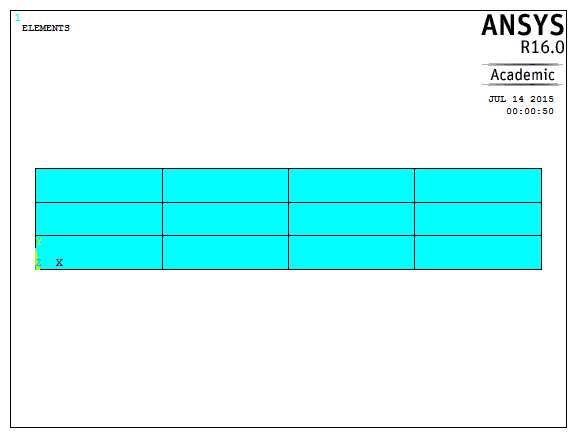
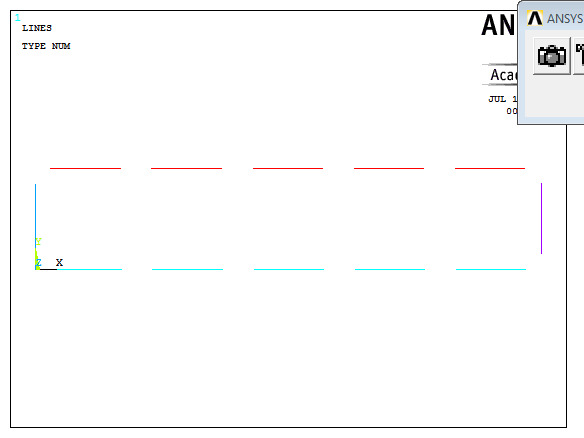
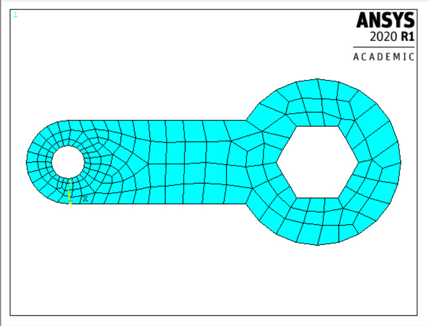
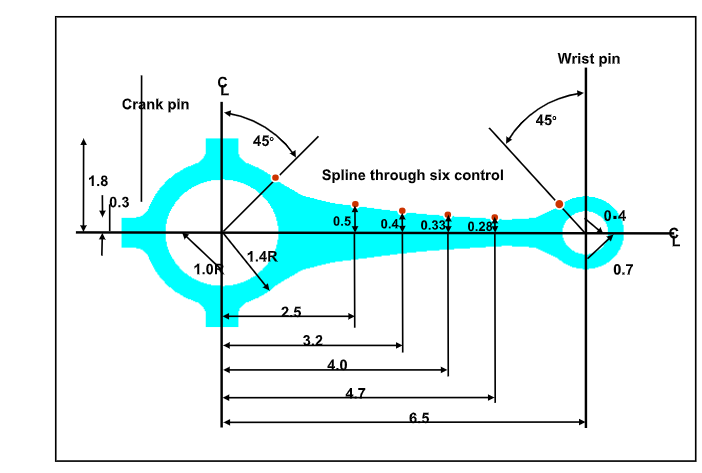
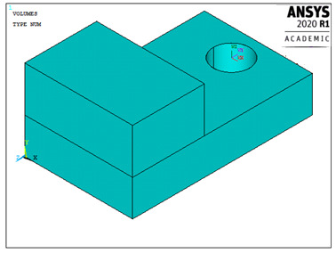
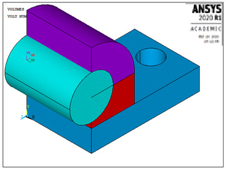

3 MODELING AND MESHING
3.1 Model Generation
The function of a finite element analysis is to rebuild mathematically the behavior of a real engineering system. The analysis must be a precise mathematical model of the system. This model comprises the nodes, elements, material properties, real constants, boundary conditions, and other features that are used to represent the physical system.
3.1.1 What Is Model Generation?
Model generation usually takes on the narrower meaning of generating the nodes and elements that represent the spatial volume and connectivity of the real system. Thus, model generation involves the process of defining the geometric configuration of the model's nodes and elements. ANSYS offers the following approaches to model generation:
- Creating a solid model using ANSYS
- Using direct generation
- Importing a model created in a computer-aided design (CAD) system
3.1.2 Steps Involved in Model Generation
A general modeling session might follow this common outline:
- Start by planning the approach. Find out the objectives, choose what basic form the model will take, decide appropriate element types, and consider how to set up an appropriate mesh density. Carryout general planning before initiating the session.
- Enter the preprocessor (PREP7) to begin the model-building session. Most often, the model is built using solid modeling procedures.
- Establish a working plane.
- Create basic geometric features using geometric primitives and Boolean operators.
- Activate the suitable coordinate system.
- Generate other solid model features from the bottom up. That is, create keypoints, and then define lines, areas, and volumes as needed.
- Employ more Boolean operators or number controls to join separate solid model regions together as appropriate.
- Create tables of element attributes.
- Set element attribute pointers.
- Set meshing controls to set up the desired mesh density if desired. This step is not always required because default element sizes exist.
- Generate nodes and elements by meshing the solid model.
- After nodes and elements are generated, add features such as surface-to-surface contact elements, coupled degrees of freedom, and constraint equations.
- Save the model data to Jobname.DB.
- Exit the preprocessor.
3.1.3 Solid Modeling Vs Direct Generation
Two different methods can be used to generate the model: solid modeling and direct generation. With solid modeling, describe the geometric boundaries of the model, establish controls over the size and desired shape of the elements, and then instruct the ANSYS program to generate the nodes and elements automatically. In the direct generation method, the analyst determines the location of every node and the size, shape, and connectivity of every element prior to defining these entities.
The direct generation method is essentially a hands-on, ‘manual’ method that requires to keep track of all the node numbers as the finite element mesh is developed. This detailed accounting can become tiresome for large models, leading to the potential for modeling errors. Solid modeling is usually more dominant and flexible than direct generation, and is by and large the preferred choice for generating the model.
The relative advantages and disadvantages of the two approaches are listed here.
Solid Modeling
On the optimistic side, solid modelling is generally more apt for large or complex models, especially 3-D models. This method permits to work with a comparatively small number of entities and permits geometric operations that cannot be completed with nodes and elements. It supports the use of ‘primitive’ areas and volumes. It also facilitates Boolean operations for ‘top down’ construction and readily permits modifications to geometry.
However, solid modelling can necessitate large amounts of system time. It can be more taxing, requiring more data entries than direct generation and can ‘fail’ under certain situations.
Direct Generation
On the positive side, direct generation is handy for small or simple models. It offers complete control over the geometry and numbering of every node and every element.
However, direct generation is usually more time consuming; the volume of data one must work with can become vast. It cannot be used with adaptive meshing. Direct generation can become monotonous, requiring the analyst to pay more concentration to every detail of the mesh.
3.1.4 Importing Solid Models Created in CAD systems
Instead of generating the solid models using ANSYS, the analyst can produce them in her/his favorite CAD system and then import them into ANSYS, by saving them in the IGES file format. ANSYS comes with IGES support by default. There are Geometry Interfaces available for Pro/E, CATIA, UG, Solidworks, Parasolid, etc. All of these geometry interfaces on the ANSYS Traditional side perform a conversion of the geometry into an ANSYS Neutral File (.anf) format, which it then reads in.
Import CAD geometry using File > Import. Models imported from CAD systems may require general repair if they are not of appropriate quality.
Generating a model using a CAD package has the following advantages:
- Repetition of effort can be avoided by using existing CAD models to produce solid models for analysis.
- More familiar tools can be used to create models.
3.2 Planning the Approach
As the analyst begins to create the model, s/he will make a number of decisions that determine how the real system will be simulated mathematically. For example: What are the objectives of the analysis? Will s/he model all, or just a portion, of the real system? How much detail will be included in the model? What kinds of elements will be used? How dense should the finite element mesh be?
An attempt will be made to balance computational expense against precision of results. The decisions made in the planning stage of the analysis will mainly decide the success or failure of the analysis.
This first step of the analysis depends not on the capabilities in the ANSYS program, but on knowledge, experience, and professional expertize of the analyst. Only s/he can determine what the objectives must be. The objectives established at the start will control the rest of the choices as the model is created.
3.2.1 Choosing a Model Type
The ANSYS model may be categorized as 2-D or 3-D, and as composed of point elements, line elements, area elements, or solid elements. Of course, the analyst can mix different kinds of elements (Fig. 3.1) as required. For example, the analyst might model a stiffened shell structure using 3-D shell elements to represent the skin and 3-D beam elements to represent the ribs.
Fig. 3.1 Different types of elements
LINE models can represent 2-D or 3-D beam or pipe structures, as well as 2-D models of 3-D axisymmetric shell structures. Solid modeling usually does not offer much benefit for generating line models; they are more often created by direct generation methods.
2-D SOLID analysis models are used for thin planar structures (plane stress), ‘infinitely long’ structures having a constant cross section (plane strain), or axisymmetric solid structures. Although many 2-D analysis models are relatively easy to create by direct generation methods, they are usually easier to create with solid modeling.
3-D SHELL models are used for thin structures in 3-D space. Although some 3-D shell analysis models are relatively easy to create by direct generation methods, they are usually easier to create with solid modeling.
3-D SOLID analysis models are used for thick structures in 3-D space that have neither a constant cross section nor an axis of symmetry. Creating a 3-D solid analysis model by direct generation methods usually requires considerable effort. Solid modeling will nearly always make the job easier.
3.2.2 Choosing Between Linear and Higher Order Elements
The ANSYS program's element library includes two basic types of area and volume elements: linear and quadratic. These basic element types are represented schematically in Fig. 3.2. Look at some of the points involved in selecting between these two basic element types:
Fig. 3.2 Area and Volume Types
(a) Linear isoparametric (b) Linear isoparametric with extra shapes (c) Quadratic
3.2.2.1 Linear Elements
For structural analyses, the corner node elements with extra shape functions will often yield an accurate solution. When using these elements, it is essential to avoid their degenerate forms. That is, avoid using the triangular form of 2-D linear elements and the wedge or tetrahedral forms of 3-D linear elements. Also take care to avoid using excessively distorted linear elements.
In nonlinear structural analyses, better accuracy can be obtained at less cost by using a fine mesh rather than a comparable coarse mesh of quadratic elements. Examples of (a) linear and (b) quadratic elements are shown in Fig. 3.3.
Fig. 3.3 Comparable Grids
When modeling a curved shell, choose between using curved or flat shell elements. Each option has its own pros and cons. The majority of problems can be solved to a high degree of accuracy in a minimum amount of computer time with flat elements. Take care to ensure that enough flat elements are used to model the curved surface satisfactorily. Obviously, the smaller the element, the higher will be the accuracy.
For most non-structural analyses, the linear elements are nearly as good as the higher order elements, and are less expensive to use. Degenerate elements usually produce accurate results in non-structural analyses.
3.2.2.2 Quadratic Elements (Mid-side Nodes)
For linear structural analyses with degenerate element shapes, the quadratic elements will usually give better results at less expense than will the linear elements.
3.3 Coordinate Systems
The ANSYS program uses several types of coordinate systems, each used for a different purpose:
- Global and local coordinate systems are used to locate geometry items in space.
- The display coordinate system determines the system in which geometry items are listed or displayed.
- The nodal coordinate system defines the degree of freedom directions at each node and the orientation of nodal results data.
- The element coordinate system determines the orientation of material properties and element results data.
- The results coordinate system is used to convert nodal or element results data to a particular coordinate system for listings, displays, or general postprocessing operations (POST1).
The working plane, which is separate from the coordinate systems, is for locating geometric primitives during the modeling process.
3.3.1 Global and Local Coordinate Systems
Global and local coordinate systems are used to locate geometry items. When a node or a keypoint is defined, its coordinates are interpreted in the global Cartesian system by default. For some models, however, it may be more convenient to define the coordinates in a system other than global Cartesian. Input the geometry in any of three predefined (global) coordinate systems, or in any number of user defined (local) coordinate systems.
3.3.1.1 Global Coordinate Systems
A global coordinate system (Fig. 3.4) can be thought of as an absolute reference frame. Three predefined global systems are available: Cartesian, cylindrical, and spherical. All three of these systems are right-handed and, by definition, share the same origin. They are identified by their coordinate system (CS) numbers: 0 for Cartesian, 1 and 5 for cylindrical, and 2 for spherical.
Fig. 3.4 Global Coordinate Systems
(a) Cartesian (X, Y, Z components) coordinate system 0 (C.S.0)
(b) Cylindrical (R, θ, Z components) coordinate system 1 (C.S.1)
(c) Spherical (R, θ, φ components) coordinate system 2 (C.S.2)
(d) Cylindrical (R, θ, Y components) coordinate system 5 (C.S.5)
3.3.1.2 Local Coordinate Systems
In many cases, it may be necessary to establish own coordinate system, whose origin is offset from the global origin, or whose orientation differs from that of the predefined global systems. Such user defined coordinate systems, known as local coordinate systems, can be created in the following ways:
- Use Utility Menu> WorkPlane> Local Coordinate Systems> Create Local CS> At Specified Loc to define the local system in terms of global Cartesian coordinates.
- Use Utility Menu> WorkPlane> Local Coordinate Systems> Create Local CS> By 3 Nodes to define the local system in terms of existing nodes.
- Use Utility Menu> WorkPlane> Local Coordinate Systems> Create Local CS> By 3 Keypoints to define the local system in terms of existing keypoints.
- Use Utility Menu> WorkPlane> Local Coordinate Systems> Create Local CS> At WP Origin to define the local system to be centered at the origin of the presently defined working plane.
When a local coordinate system is defined, it becomes the active coordinate system. As a local system is created, assign it a CS identification number (which must be 11 or greater). Local coordinate systems can be created or deleted in any phase of the ANSYS session. Use Utility Menu> WorkPlane> Local Coordinate Systems> Delete Local CS to delete a local system. Use Utility Menu> List> Other> Local Coord Sys to view the status of all global and local coordinate systems.
The local coordinate systems can be Cartesian, cylindrical, or spherical, similar in form to the three predefined global systems. The analyst may define local cylindrical and spherical coordinate systems in either circular or elliptical configuration. Additionally, a toroidal local coordinate system can be defined, as illustrated in Fig. 3.5.
Fig. 3.5 Types of Coordinate System
3.3.1.3 Active Coordinate System
The analyst may define as many coordinate systems as s/he likes, but only one of these systems may be active at a time. The choice of active coordinate system is determined as follows: Initially, the global Cartesian system is active by default. Each time a local coordinate system is defined, that newly-defined system then automatically becomes the active one. Use one of the following methods to activate one of the global coordinate systems or some other previously defined coordinate system:
- Utility Menu> WorkPlane> Change Active CS to> Global Cartesian
- Utility Menu> WorkPlane> Change Active CS to> Global Cylindrical
- Utility Menu> WorkPlane> Change Active CS to> Global Spherical
- Utility Menu> WorkPlane> Change Active CS to> Specified Coord Sys
- Utility Menu> WorkPlane> Change Active CS to> Working Plane
A coordinate system can be activated in any stage of the ANSYS session. That same coordinate system will remain active in all later stages until it is changed intentionally.
3.3.2 Display Coordinate System
By default, a listing of nodes or keypoints always shows their global Cartesian coordinates, even if they were defined in a different coordinate system. The display coordinate system used in such listings can be changed by one of the following methods:
- Utility Menu> WorkPlane> Change Display CS to> Global Cartesian
- Utility Menu> WorkPlane> Change Display CS to> Global Cylindrical
- Utility Menu> WorkPlane> Change Display CS to> Global Spherical
- Utility Menu> WorkPlane> Change Display CS to> Specified Coord Sys
Changing the display coordinate system will also affect the graphical displays. Unless a specific effect is advantageous in the displays, reset the display coordinate system to the global Cartesian system before issuing any graphics display action commands.
3.3.3 Element Coordinate Systems
Every element has its own coordinate system, the element coordinate system, that determines the direction of orthotropic material properties, applied pressures, and results for that element. All element coordinate systems are right-handed orthogonal systems.
The default orientations for most elements' coordinate systems fit the following patterns:
- Line elements usually have the element X-axis directed from their node I toward their node J.
- Shell elements usually have the element X-axis similarly directed (from I toward J), the Z-axis normal to the shell surface, and the Y-axis perpendicular to the X and Z axes.
- For 2-D and 3-D solid elements, the element coordinate system is usually parallel to the global Cartesian system.
Many element types have key options that permit to change the default element coordinate system orientation. For area and volume elements, the analyst can also change the orientation to align the element coordinate system with a previously defined local system by using: Main Menu> Preprocessor> Meshing> Mesh Attributes> Default Attribs or Main Menu> Preprocessor> Modeling> Create> Elements> Elem Attributes.
3.3.4 Results Coordinate System
Results data are calculated during solution and consist of displacements (UX, UY, ROTX, etc.), gradients (TGX, TGY, etc.), stresses (SX, SY, SZ, etc.), strains (EPPLX, EPPLXY, etc.), etc. These data are stored in the database and on the results file in either the nodal coordinate system or the element coordinate system. However, results data are generally rotated into the active results coordinate system for displays, listings, and element table data storage.
The active results coordinate system can be changed to another system, or to the coordinate systems used during solution. On listing, displaying, or operating on the results data, they are rotated to this results coordinate system first. Use Main Menu> General Postproc> Options for Output or Utility Menu> List> Results> Options to change the results coordinate system.
3.4 Working Planes
Although the cursor appears as a point on the screen, it actually represents a line through space, normal to the screen. In order to be able to pick a point with the cursor, it is necessary to define an imaginary plane that, when intersected by the normal line of the cursor, will yield a unique point in space. This imaginary plane is called a working plane (Fig. 3.6). Another way to consider the interaction between the cursor and the working plane is to picture the cursor as a point that moves around on the working plane. The working plane, then, acts as a ‘tablet’ on which the analyst writes with the cursor.
Fig. 3.6 Relationships among Display Screen, Cursor, Working Plane, and Picked Point
A working plane is an infinite plane with an origin, a 2-D coordinate system, a snap increment, and a display grid. Only one working plane can be defined at a time. Creating a new working plane eliminates the existing working plane. The working plane is separate from the coordinate systems; for example, the working plane can have a different point of origin and rotation than the active coordinate system.
3.4.1 Creating a Working Plane
By default, when the analyst initiates the ANSYS session, there is a working plane located on the global Cartesian X-Y plane, with its x and y axes colinear with the global Cartesian X and Y axes.
3.4.1.1 Defining a New Working Plane
A new working plane (Fig. 3.7) can be defined by using any of the following methods:
- Use Utility Menu> WorkPlane> Align WP with> XYZ Locations to define a working plane by three points, or by locating it on the plane normal to a viewing vector at a specified point.
- Use Utility Menu> WorkPlane> Align WP with> Nodes to define a working plane by three nodes, or by locating it on the plane normal to a viewing vector at a specified node.
- Use Utility Menu> WorkPlane> Align WP with> Keypoints to define a working plane by three keypoints, or by locating it on the plane normal to a viewing vector at a specified keypoint.
3.4.1.2 Controlling the Display and Style of the Working Plane
Use Utility Menu> List> Status> Working Plane to obtain the current status of the working plane.
3.4.1.3 Moving the Working Plane
A working plane can be moved to a new location using any of the following methods:
- Use Utility Menu> WorkPlane> Offset WP to> Keypoints to move the working plane origin to the average location of keypoints.
- Use Utility Menu> WorkPlane> Offset WP to> Nodes to move the working plane origin to the average location of nodes.
- Use Utility Menu> WorkPlane> Offset WP by Increments to offset the working plane.
3.4.1.4 Rotating the Working Plane
The working plane can be rotated to a new orientation in two ways: by rotating the working plane's x-y coordinate system within the plane, or by rotating the entire plane to a new position. Use Utility Menu> WorkPlane> Offset WP by Increments to rotate the working plane.
3.4.2 Working Plane Enhancements
The working plane can be enhanced with a snap increment, a display grid, retrieval tolerance, and coordinate type using GUI path described earlier. Then, the coordinate system can be forced to follow the working plane as the working plane is moved using:
- Utility Menu> WorkPlane> Change Active CS to> Global Cartesian
- Utility Menu> WorkPlane> Change Active CS to> Global Cylindrical
- Utility Menu> WorkPlane> Change Active CS to> Global Spherical
- Utility Menu> WorkPlane> Change Active CS to> Specified Coordinate Sys
- Utility Menu> WorkPlane> Change Active CS to> Working Plane
- Utility Menu> WorkPlane> Offset WP to> Global Origin
All geometry is created with respect to the working plane, which by default is aligned with the global Cartesian coordinate system. The ‘Working Plane’ is actually the XY plane of the working coordinate system. The working coordinate system ID is coordinate system 4 in ANSYS. Global Cartesian is ID 0, Global Cylindrical is ID 1, and Global Spherical is ID 2.
Turn on the working plane using Utility Menu> WorkPlane> Display Working Plane. Change the way the working plane looks or adjust the snap settings under Utility Menu> WorkPlane> WP Settings…. Move the working plane around using Utility Menu> WorkPlane> Offset WP to…. Align the working plane with various parts of the model using Utility Menu> WorkPlane> Align WP with…. If more than one node or keypoint is selected to offset the working plane to, it will go to the average location of the selected entities. The working plane can be used to slice and dice the model. For example to cut an area in pieces use Main Menu> Modeling> Operate> Booleans> Divide> Area by WrkPlane.
Fig. 3.7 Working Plane
3.5 Solid Modeling
A solid model relieves the analyst of the time-consuming task of building a complicated finite element model by direct generation. Some solid modeling and meshing operations can help to speed up the creation of the final analysis model.
3.5.1 Solid Modeling Operations
The points that define the vertices of the model are called keypoints and are the ‘lowest-order’ solid model entities. If, in building the solid model, the analyst first creates the keypoints, and then uses those keypoints to define the ‘higher-order’ solid model entities, the model is said to be built ‘from the bottom up’ (Fig. 3.8). Models built from the bottom up are defined within the currently active coordinate system.
Fig. 3.8 Bottom Up Construction
The ANSYS program also gives the analyst the ability to assemble the model using geometric primitives, which are fully-defined lines, areas, and volumes. As a primitive is created, the program automatically creates all the ‘lower’ entities associated with it. If the modeling effort begins with the ‘higher’ primitive entities, the model is said to be built ‘from the top down.’ Bottom up and top down modeling techniques can be freely combined, as appropriate, in any model. Remember that geometric primitives (Fig. 3.9) are built within the working plane while bottom up techniques are defined against the active coordinate system.
Fig. 3.9 Top Down Constructions (Primitives)
Using Boolean operators: The analyst can ‘sculpt’ the solid model using intersections, subtractions, and other Boolean operations (Fig. 3.10). Booleans allow to work directly with higher solid model entities to create complex shapes. Both bottom up and top down creations can be used in Boolean operations.
Fig. 3.10 Create Complex Shapes With Boolean Operations
Dragging and rotating: Boolean operators, although convenient, can be computationally costly. Sometimes a model can be constructed more efficiently by dragging (Fig. 3.11) or rotating.
Fig. 3.11 Dragging an Area to Create a Volume
Moving and copying solid model entities: A complicated area or volume that appears repetitively in the model need only be constructed once; it can then be moved, rotated, and copied (Fig. 3.12) to a new location on the model. It might be more convenient to place geometric primitives in their proper location by moving them, rather than by changing the working plane.
Fig. 3.12 Copying an Area
Meshing: The ultimate objective in building a solid model is to mesh (Fig. 3.13) that model with nodes and elements. First complete the solid model, set element attributes, and establish meshing controls. Then turn the ANSYS program free to generate the finite element mesh. A ‘mapped’ mesh containing all quadrilateral, all triangular, or all brick elements can be requested by taking care to meet certain requirements.
Fig. 3.13 Free and Mapped Meshes
Moving and copying nodes and elements: Automatic meshing is a vast improvement over direct generation of nodes and elements, but it can sometimes be computationally time consuming. If the model contains repetitive features, the most efficient approach to model generation would be to model and mesh a pattern region of the model and then generate copies (Fig. 3.14) of that meshed region.
Fig. 3.14 Copying a Meshed Area
Solid model loads: In the ANSYS program, loads are normally associated with nodes and elements. However, using solid modeling, it is inconvenient to define loads at nodes and elements. Fortunately, loads may be assigned directly to the solid model. When the solution calculations are initiated, the program will automatically transfer these solid model loads to the finite element model.
Revising the model (clearing and deleting): Before revising the model, it is necessary to be aware of the hierarchy of solid model and finite element model entities. A lower order entity cannot be deleted if it is attached to a higher-order entity. Thus, a volume cannot be deleted if it has been meshed, a line cannot be deleted if it is attached to an area, and so forth. If an entity is attached to any loads, deleting or redefining that entity will delete the attached loads from the database. The hierarchy of modeling entities is as listed below:
- Highest Elements (and Element Loads)
- Nodes (and Nodal Loads)
- Volumes (and Solid-Model Body Loads)
- Areas (and Solid-Model Surface Loads)
- Lines (and Solid-Model Line Loads)
- Lowest Keypoints (and Solid-Model Point Loads)
If it is necessary to revise (Fig. 3.15) a solid model after it has been meshed, first delete all the nodes and elements in the portion of the model to be revised, using Main Menu> Preprocessor> Meshing> Clear. Solid model entities can be deleted and redefined after clearing the solid model. As an alternative to clearing, deleting, and redefining, consider modifying the keypoints directly, using: Main Menu> Preprocessor> Modeling> Move/Modify> Keypoints> Set of KPs or Main Menu> Preprocessor> Modeling> Move/Modify> Keypoints> Single KP.
Fig. 3.15 Revising a Meshed Solid Model
3.5.2 Creating the Solid Model from the Bottom Up
Any solid model, whether assembled from the bottom up or from the top down, is defined in terms of keypoints, lines, areas, and volumes. Figure 3.16 illustrates these entities.
Fig. 3.16 Basic Solid Model Entities
Geometry in ANSYS is created from Main Menu> Preprocessor> Modeling> Create and has the following terminology (Fig. 3.17),
Keypoints: These are points, locations in 3D space.
Lines: This includes straight lines, curves, circles, spline curves, etc. Lines are typically defined using existing keypoints.
Areas: This is a surface. When an area is created, it’s associated lines and keypoints are automatically created to border it.
Volumes: This is a solid. When a volume is created, it’s associated areas, lines and keypoints are automatically created.
Solid model: In most packages this would refer to the volumes only, but in ANSYS this refers to the geometry. Any geometry, for example, a line is considered a ‘solid model’. A child entity cannot be deleted without deleting its parent, in other words a line cannot be deleted if it’s a part of an area, can’t delete a keypoint if it’s the end point of a line, etc.
Keypoints are the vertices, lines are the edges, areas are the faces, and volumes are the interior of the object. Notice that there is a hierarchy in these entities: volumes, the highest-order entities, are bounded by areas, which are bounded by lines, which in turn are bounded by keypoints.
In bottom up construction, first create keypoints and use those keypoints to define higher-order solid model entities (Fig. 3.17).
Fig. 3.17 Bottom up construction
3.5.2.1 Keypoints
When building the model from the bottom up, begin by defining the lowest-order solid model entities, keypoints. Keypoints are defined within the currently active coordinate system. Then define lines, areas, and volumes connecting these keypoints. It is not always necessary to explicitly define all entities in ascending order to create higher-order entities: define areas and volumes directly in terms of the keypoints at their vertices. The intermediate entities will then be generated automatically as needed. For example, a brick-like volume is defined in terms of the eight keypoints at its corners, the program will automatically generate the bounding areas and lines.
Use Main Menu> Preprocessor> Modeling> Create> Keypoints> In Active CS or Main Menu> Preprocessor> Modeling> Create> Keypoints> On Working Plane to define individual keypoints in the active coordinate system.
Use Main Menu> Preprocessor> Modeling> Create> Keypoints> On Line or Main Menu> Preprocessor> Modeling> Create> Keypoints> On Line w/Ratio to define individual keypoints at a given location on an existing line.
Once an initial pattern of keypoints is created, generate additional keypoints and work with existing keypoints using:
- Use Main Menu> Preprocessor> Modeling > Create> Keypoints> KP between KPs to create a keypoint between two existing keypoints
- Use Main Menu> Preprocessor> Modeling > Create> Keypoints> Fill between KPs to generate keypoints between two keypoints.
- Use Main Menu> Preprocessor> Modeling > Create> Keypoints> KP at Center to create a keypoint at the center of a circular arc defined by three locations.
- Use Main Menu> Preprocessor> Modeling> Copy> Keypoints to generate additional keypoints from a pattern of keypoints.
The keypoints can be maintained using the methods listed below:
- Use Utility Menu> List> Keypoint> Coordinates +Attributes or Utility Menu> List> Keypoint> Coordinates only or Utility Menu> List> Keypoint> Hard Points to list defined keypoints.
- Use Utility Menu> Select> Entities to select keypoints.
3.5.2.2 Lines
Lines are mainly used to represent the edges of an object. As with keypoints, lines are defined within the currently active coordinate system. It is not always necessary to define all lines explicitly, because the program will generate the necessary lines in many instances when an area or volume is defined. Lines are required if it is necessary to generate line elements or to create areas from lines.
Copy a pattern of lines to generate additional lines using any of the methods described below:
Use Main Menu> Preprocessor> Modeling> Copy> Lines or Main Menu> Preprocessor> Modeling> Move/Modify> Lines to generate additional lines from a pattern of lines. Use Main Menu> Preprocessor> Modeling> Reflect> Lines to generate lines from a line pattern by symmetry reflection.
An existing line can be modified by redefining it by using one of the methods described below:
- Use Main Menu> Preprocessor> Modeling> Operate> Booleans> Divide> Line into 2 Ln's or Main Menu> Preprocessor> Modeling> Operate> Booleans> Divide> Line into N Ln's or Main Menu> Preprocessor> Modeling> Operate> Booleans> Divide> Lines w/Options to divide up a line into smaller lines.
Lines can be maintained using the methods listed below:
- Use Utility Menu> Plot> Lines or Utility Menu> Plot> Specified Entities> Lines to display lines.
- Use Main Menu> Preprocessor> Modeling> Delete> Line and Below or Main Menu> Preprocessor> Modeling> Delete> Lines Only to delete lines
3.5.2.3 Areas
Flat areas are used to represent 2-D solid objects. Curved as well as flat areas are used to represent 3-D surfaces, such as shells, and the faces of 3-D solid objects. Areas are required to use area elements or to create volumes from areas. Most commands that create areas will also automatically generate the necessary lines and keypoints; similarly, many areas can be conveniently generated by defining volumes.
Any of the methods described below can be used to explicitly define areas. Several geometric primitives and Boolean commands can also be used to generate or modify areas.
- Use Main Menu> Preprocessor> Modeling> Create> Areas> Arbitrary> Through KPs to define an area in terms of its vertices.
- Use Main Menu> Preprocessor> Modeling> Create> Areas> Arbitrary> By Lines to define an area in terms of its boundaries.
- Use Main Menu> Preprocessor> Modeling> Operate> Extrude> Along Lines to define an area by ‘sweeping’ a line along a characteristic path.
- Use Main Menu> Preprocessor> Modeling> Operate> Extrude> About Axis to define an area by rotating a line pattern about an axis.
Existing areas can be copied to generate additional areas using the methods described below:
- Use Main Menu> Preprocessor> Modeling> Copy> Areas or Main Menu> Preprocessor> Modeling> Move/Modify> Areas> Areas to generate additional areas from a pattern of areas.
- Use Main Menu> Preprocessor> Modeling> Reflect> Areas to generate areas from an area pattern by symmetry reflection.
Use the methods listed below to maintain areas. Only unmeshed areas that are not attached to a volume can be redefined or deleted.
- Use Utility Menu> List> Areas or Utility Menu> List> Picked Entities> Areas to list defined areas.
- Use Utility Menu> Plot> Areas or Utility Menu> Plot> Specified Entities> Areas to display areas.
- Use Main Menu> Preprocessor> Modeling> Delete> Area and Below or Main Menu> Preprocessor> Modeling> Delete> Areas Only to delete areas.
3.5.2.4 Volumes
Volumes are used to represent 3-D objects, and are required only to use volume elements. Most commands that create volumes will also automatically generate the necessary lower-order entities.
Adopt any of the methods described below to define volumes. Several geometric primitives and Boolean commands can also be used to generate or modify areas.
- Use Main Menu> Preprocessor> Modeling> Create> Volumes> Arbitrary> Through KPs to define a volume in terms of its vertices.
- Use Main Menu> Preprocessor> Modeling> Create> Volumes> Arbitrary> By Areas to define a volume in terms of its boundaries.
- Use Main Menu> Preprocessor> Modeling> Operate> Extrude> About Axis to define a volume by rotating an area pattern about an axis.
Volumes can be maintained using the methods described below. Note that only unmeshed volumes can be redefined or deleted.
- Use Utility Menu> List> Picked Entities> Volumes or Utility Menu> List> Volumes to list volumes.
- Use Utility Menu> Plot> Specified Entities> Volumes or Utility Menu> Plot> Volumes to display volumes.
- Use Utility Menu> Select> Entities to select volumes.
3.5.3 Creating the Solid Model from the Top Down
In top down construction, geometric primitives are used to assemble the model. As a primitive is created, the program automatically creates all the ‘lower’ entities associated with it. A geometric primitive is a commonly used solid modeling shape that can be created with a single ANSYS command.
Because primitives are higher-order entities that can be constructed without first defining any keypoints, model generation that uses primitives is sometimes referred to as ‘top down’ modeling. Geometric primitives are created within the working plane.
Bottom up and top down modeling techniques can freely be combined, as appropriate, in any model. Remember that geometric primitives are built within the working plane while bottom up techniques are defined against the active coordinate system.
3.5.3.1 Creating Area Primitives
Any area primitives created will lie flat on the working plane and will be oriented according to the working plane coordinate system. Area primitives must have surface areas greater than zero.
3.5.3.2 Creating Volume Primitives
Volume primitives are positioned relative to the working plane.
3.5.4 Sculpting the Model with Boolean Operations
Boolean operations can be applied to almost any solid model construction, whether it was created from the top down or from the bottom up. The only exceptions are that Boolean operations are not valid for entities created by
concatenation and that some Boolean operations cannot always be performed on entities that contain degeneracies.
Also, all solid-model loads and element attributes should be defined after the Boolean operations are completed. Take care to redefine the element attributes and solid-model loads when using Booleans to modify an existing model.
3.5.4.1 Intersect
An intersection defines a new set of entities which is common to every original entity included in the operation (Fig. 3.18). In other words, an intersection represents the region of overlap of two or more entities. The new set can be of the same or lower dimension as the original entities. For instance, the intersection of two lines can be a keypoint, or it can be a line. The Boolean intersect commands are as follows:
- Use Main Menu> Preprocessor> Modeling> Operate> Booleans> Intersect> Common> Lines to create the intersection of lines.
- Use Main Menu> Preprocessor> Modeling> Operate> Booleans> Intersect> Common> Areas to create the intersection of areas.
- Use Main Menu> Preprocessor> Modeling> Operate> Booleans> Intersect> Common> Volumes to create the intersection of volumes.
Fig. 3.18 Intersect operation
3.5.4.2 Add
An addition of entities defines a new entity that includes all parts of the originals (Fig. 3.19). The resulting entity is a single seamless whole, containing no internal divisions. Only volumes or coplanar 2-D areas can be added in the ANSYS program. Areas added may contain holes within the area;elsa (i.e., internal loops. The Boolean add commands are as follows:
- Use Main Menu> Preprocessor> Modeling> Operate> Booleans> Add> Areas to add separate areas to create a single area.
- Use Main Menu> Preprocessor> Modeling> Operate> Booleans> Add> Volumes to add separate volumes to create a single volume.
Fig. 3.19 Add operation
3.5.4.3 Subtract
Subtracting (Fig. 3.20) one entity (E2) from another (E1), gives one of two results: Either the analyst creates a new entity or entities (E1 - E2 ≥ E3) that is of the same dimensionality as E1 and that contains no overlap with E2, or, if the overlap is of a lower dimensionality, simply E1 will be divided into two or more new entities (E1 - E2 ≥ E3 and E4). The Boolean subtract GUI paths are as follows:
- Use Main Menu> Preprocessor> Modeling> Operate> Booleans> Subtract> Lines or Main Menu> Preprocessor> Modeling> Operate> Booleans> Subtract> With Options> Lines to subtract lines from lines
- Use Main Menu> Preprocessor> Modeling> Operate> Booleans> Subtract> Areas or Main Menu> Preprocessor> Modeling> Operate> Booleans> Subtract> With Options> Areas to subtract areas from areas.
Fig. 3.20 Subtract operation
3.5.4.4 Overlap
The overlap commands will join two or more entities to create three or more new entities that encompass all parts of the originals (Fig. 3.21). The end result is similar to an ‘add’ operation, except that boundaries will be created around the overlap zone. Thus, the overlap operation produces a number of relatively uncomplicated regions, as compared to the single relatively complicated region created by the add operation. For this reason, overlapped entities will often mesh better than added entities.
Overlapping is valid only if the overlap region has the same dimensionality as the original entities. The Boolean overlap GUI paths are as follows:
- Use Main Menu> Preprocessor> Modeling> Operate> Booleans> Overlap> Lines to overlap lines
- Use Main Menu> Preprocessor> Modeling> Operate> Booleans> Overlap> Areas to overlap areas.
Fig. 3.21 Overlap operation
3.5.4.5 Partition
The partition commands will join two or more entities to create three or more new entities that encompass all parts of the originals (Fig. 3.22). The end result is similar to an ‘overlap’ operation if the overlap is of the same dimensionality as the original entities. However, unlike the overlap operations, non-overlapping input entities will not be deleted. The Boolean partition GUI paths are as follows:
- Use Main Menu> Preprocessor> Modeling> Operate> Booleans> Partition> Lines to partition lines.
- Use Main Menu> Preprocessor> Modeling> Operate> Booleans> Partition> Areas to partition areas.
Fig. 3.22 Partition operation
3.5.4.6 Glue (or Merge)
Glue is similar to overlap, except that it applies only to cases in which the intersection between entities occurs at a boundary, and is one dimension lower than the original entities (Fig. 3.23). The entities maintain their individuality, but they become connected at their intersection, as shown in the illustrations below. The Boolean glue GUI paths are as follows:
- Use Main Menu> Preprocessor> Modeling> Operate> Booleans> Glue> Lines to glue lines by ‘gluing’ lines.
- Use Main Menu> Preprocessor> Modeling> Operate> Booleans> Glue> Areas to glue areas by ‘gluing’ areas.
Fig. 3.23 Glue operation
3.5.4.7 Divide
Divides an entity into two or more entities (Fig. 3.24).
Fig. 3.24 Divide operation
3.5.5 Updating after Boolean Operations
Some Boolean commands will automatically update entities after the Boolean operation is performed on attached lower-order entities. For instance, if the GUI path Main Menu> Preprocessor> Modeling> Operate> Booleans> Add> Areas is used to add several areas together that are attached to a single volume, that volume will be updated by replacing the original areas with the newly produced area. This releases the analyst from the work of deleting the higher-order entity and rebuilding it with bottom up techniques.
3.5.6 Moving and Copying Solid Model Entities
If the model repetitively uses a relatively complicated area or volume, it is necessary to construct that part only once. Then copies of that part can be generated in new locations and new orientations as needed.
Move translates or rotates an entity by specifying DX,DY,DZ offsets (Fig. 3.25). DX,DY,DZ are interpreted in the active CS. To translate an entity, make the active CS Cartesian. To rotate an entity, make the active CS cylindrical or spherical. Another option is to transfer coordinates to a different system.
Fig. 3.25 Moving an area
Geometric primitives can also be considered to be ‘parts’. As geometric primitives are created, their location and orientation will be determined by the current working plane. Because it is not always particularly convenient to redefine the working plane for each new primitive that is created, it is more practical to allow a primitive to be created at the ‘wrong’ location, and then move that primitive to its correct position. Of course, this operation is not limited to geometric primitives: any solid model entity can be copied or moved.
Copy generates multiple copies of an entity. Specify the number of copies (2 or greater) and the DX,DY,DZ offset for each copy. DX,DY,DZ are interpreted in the active CS. It is useful to create multiple holes, ribs, protrusions, etc. (Fig. 3.26).
Fig. 3.26 Copying an Area
3.5.6.1 Generating Entities from a Pattern
ANSYS provides the following GUI paths for generating entities from a pattern:
- Use Main Menu> Preprocessor> Modeling> Copy> Keypoints to generate additional keypoints from a pattern of keypoints
- Use Main Menu> Preprocessor> Modeling> Copy> Lines or Main Menu> Preprocessor> Modeling> Move/Modify> Lines to generate additional lines from a pattern of lines.
- Use Main Menu> Preprocessor> Modeling> Copy> Areas or Main Menu> Preprocessor> Modeling> Move/Modify> Areas> Areas to generate additional areas from a pattern of areas.
- Use Main Menu> Preprocessor> Modeling> Copy> Volumes or Main Menu> Preprocessor> Modeling> Move/Modify> Volumes to generate additional volumes from a pattern of volumes.
3.5.6.2 Generating Entities by Symmetry Reflection
ANSYS provides the following GUI paths for generating entities by symmetry reflection:
- Use Main Menu> Preprocessor> Modeling> Reflect> Keypoints to generate a reflected set of keypoints.
- Use Main Menu> Preprocessor> Modeling> Reflect> Lines to generate lines from a line pattern by symmetry reflection
- Use Main Menu> Preprocessor> Modeling> Reflect> Areas to generate areas from an area pattern by symmetry reflection
- Use Main Menu> Preprocessor> Modeling> Reflect> Volumes to generate volumes from a volume pattern by symmetry reflection
3.5.6.3 Transferring a Pattern of Entities to a Coordinate System
ANSYS provides the following GUI paths:
- Use Main Menu> Preprocessor> Modeling> Move/Modify> Transfer Coord> Keypoints to transfer a pattern of keypoints to another coordinate system.
- Use Main Menu> Preprocessor> Modeling> Move/Modify> Transfer Coord> Lines to transfer a pattern of lines to another coordinate system.
- Use Main Menu> Preprocessor> Modeling> Move/Modify> Transfer Coord> Areas to transfer a pattern of areas to another coordinate system.
- Use Main Menu> Preprocessor> Modeling> Move/Modify> Transfer Coord> Volumes to transfer a pattern of volumes to another coordinate system.
3.5.7 Other Operations
Besides Booleans, many other operations are available like Extrude, Scale, Reflect, Merge, Fillet.
3.5.7.1 Extrude
Extrude quickly creates volumes from existing areas (or areas from lines, and lines from keypoints). If the area is meshed, the elements can be extruded along with the areas. There are four ways to extrude areas:
- Along normal — creates volume by normal offset of areas (Fig. 3.27b)
- By XYZ offset — creates volume by a general x-y-z offset. Allows tapered extrusion.
- About axis — creates volume by revolving areas about an axis (specified by two keypoints).
- Along lines — creates volume by ‘dragging’ areas along a line or a set of contiguous lines.
Fig. 3.27 Extrude operation
3.5.7.2 Reflect
Reflect facilitates reflecting entities about a plane (Fig. 3.28). Specify the direction of reflection:
- X for reflection about the YZ plane
- Y for XZ plane
- Z for XY plane
All directions are interpreted in the active CS, which must be a Cartesian system.
Fig. 3.28 Reflect Operation
3.5.7.3 Merge
Merge attaches two entities together by removing coincident keypoints (Fig. 3.29). Observe the removal of coincident keypoints on the centre line. Merging keypoints will automatically merge coincident higher-order entities, if any. This is usually required after a reflect, copy, or other operation that causes coincident entities.
Fig. 3.29 Merge operation
3.5.7.4 Fillet
Line fillet requires two intersecting lines with a common keypoint at the intersection (Fig. 3.30). If the common keypoint does not exist, do a partition operation first. ANSYS does not update the underlying area (if any), so either add or subtract the fillet region. Area filleting is similar.
Fig. 3.30 Fillet operation
3.6 Importing Solid Models
A solid model can be created in a favorite CAD system, saved as an IGES file, and then imported to ANSYS. Once successfully imported, the model can be meshed similar to any model created within the program.
The Initial Graphics Exchange Specification (IGES) is a vendor-neutral standard format used to exchange geometric models between various CAD and CAE systems. The filter permits import of partial files. Multiple files also can be imported into the same model.
ANSYS provides the SMOOTH method for importing IGES files. This method uses the standard ANSYS geometry database and has no capabilities for automatically creating volumes.
3.7 Generating the Mesh
The process for generating a mesh of nodes and elements consists of three general steps:
- Setting the element attributes
- Setting mesh controls
- Meshing the model.
It is not always necessary to set mesh controls because the default mesh controls are appropriate for many models. If no controls are specified, the program will use the default settings to produce a free mesh. Alternatively, the SmartSize feature can be used to produce a better quality free mesh.
3.7.1 Free or Mapped Mesh
Before meshing the model, and even before building the model, it is important to think about whether a free mesh or a mapped mesh (Fig. 3.31) is appropriate for the analysis. A free mesh has no restrictions in terms of element shapes, and has no specified pattern applied to it. A mapped mesh is restricted in terms of the element shape it contains and the pattern of the mesh. A mapped area mesh contains either only quadrilateral or only triangular elements, while a mapped volume mesh contains only hexahedron elements. In addition, a mapped mesh typically has a regular pattern, with obvious rows of elements. To generate this type of mesh, build the geometry as a series of fairly regular volumes and/or areas that can accept a mapped mesh.
A mapped mesh generates a very regular grid of elements. This can only be used on rectangular shaped areas or volumes. A free mesh will mesh any entity - regardless of shape.
Fig. 3.31 Free and Mapped Meshes
3.7.2 Setting Element Attributes
Before generating a mesh of nodes and elements, the analyst must first define the appropriate element attributes. That is, s/he must specify the following:
- The element type
- Real constant set
- Material properties set
- Element coordinate system
- Section ID.
3.7.2.1 Creating Tables of Element Attributes
In order to assign attributes to the elements, the analyst must first build tables of element attributes. Typical models include element types (menu path Main Menu> Preprocessor> Element Type> Add/Edit/Delete), real constants (menu path Main Menu> Preprocessor> Real Constants), and material properties (menu path Main Menu> Preprocessor> Material Props> material option).
A table of coordinate systems can also be assembled using Utility Menu> WorkPlane> Local Coordinate Systems> Create Local CS> option). This table can be used to assign element coordinate systems to elements.
3.7.2.2 Assigning Element Attributes Before Meshing
Once the attribute tables are assembled, the analyst can assign element attributes to different parts of the model by ‘pointing’ to the appropriate entries in the tables. The pointers are simply a set of reference numbers that include a material number (MAT), a real constant set number (REAL), an element type number (TYPE), a coordinate system number (ESYS) and, for beam meshing with BEAM188, or BEAM189, a section ID number (SECNUM). The analyst can either assign the attributes directly to selected solid model entities, or define a default set of attributes that will be used for elements created in subsequent meshing operations.
3.7.3 Mesh Controls
The default mesh controls that the program uses may produce a mesh that is adequate for the model being analyzed. In this case, it is not necessary to specify any mesh controls. However, if mesh controls are used, set them before meshing the solid model.
Mesh controls allow establishing such factors as the element shape, mid-side node placement, and element size to be used in meshing the solid model. This step is one of the most important of the entire analysis, for the decisions made at this stage in the model development will profoundly affect the accuracy and economy of the analysis.
3.7.3.1 The MeshTool
The MeshTool (Main Menu> Preprocessor> Meshing> MeshTool) provides a convenient path to many of the most common mesh controls, as well as to the most frequently performed meshing operations. The MeshTool (Fig. 3.32) is an interactive ‘tool box,’ not only because of the numerous functions that it contains, but also because once opened, it remains open until the analyst either closes it or exits PREP7.
Although all of the functions available via the MeshTool are also available via the traditional commands and menus, using the MeshTool is a valuable shortcut.
Fig. 3.32 Mesh Tool
How fine of a mesh should be? Part of this is common sense. Put a finer mesh in areas of higher stress gradient, like near a stress concentration. Do simple experiments along with hand calculations; for example about 30 nodes are needed around a hole to get a good value of the peak stress. The stress convergence should follow a pattern as shown in Fig. 3.33. When the result is not changing much for a finer mesh, the mesh is converged.
Fig. 3.33 Stress convergence with mesh fineness
If global attributes are set, that material, element type, real constant, beam section, etc. will be used for all elements in the model. It’s better to use the drop down to assign different attributes to different geometric entities in the model. Then mesh the whole model at one time.
Smart Size is used to automatically pick the element edge length depending on the sizes of features in the geometry. It makes a finer mesh around smaller features in order to capture them adequately.
3.7.3.2 Element Shape
The analyst should set the allowable element shapes if s/he plans on meshing with an element type that can take on more than one shape. For instance, many area elements can both be triangular and quadrilateral shaped within the same meshed area. Volume elements can often be either hexahedral or tetrahedral shaped, but a mixture of the two shapes in the same model is not recommended.
3.7.3.3 Choosing Free or Mapped Meshing
In addition to specifying element shape, the analyst may also want to specify the type of meshing that should be used to mesh the model. This is done by setting the meshing key: Main Menu> Preprocessor> Meshing> MeshTool or Main Menu> Preprocessor> Meshing> Mesher Opts.
Use the MeshTool (Main Menu> Preprocessor> Meshing> MeshTool) to specify meshing type. The MeshTool is the recommended method. Together, the settings for element shape and meshing type affect the resulting mesh.
3.7.3.4 Controlling Placement of Midside Nodes
When meshing with quadratic elements, the placement of midside nodes can be controlled. The choices for mid-side node placement are:
- Mid-side nodes of elements on a region boundary follow the curvature of the boundary line or area. This is the default.
- Place mid-side nodes of all elements so that element edges are straight. This option allows a coarse mesh along curves. However, the curvature of the model is not matched.
- Do not create mid-side nodes.
To control mid-side node placement, use: Main Menu> Preprocessor> Meshing> Mesher Opts
3.7.3.5 Smart Element Sizing for Free Meshing
Smart element sizing (SmartSizing) is a meshing feature that creates initial element sizes for free meshing operations. SmartSizing gives the mesher a better chance of creating reasonably shaped elements during automatic mesh generation. This feature provides a range of settings for meshing.
By default, the default element size method of element sizing will be used during free meshing. However, it is recommended that SmartSizing be used instead for free meshing. To turn SmartSizing on, simply specify an element size level on the SmartSizing command.
The Advantages of SmartSizing
The SmartSizing algorithm first computes estimated element edge lengths for all lines in the areas or volumes being meshed. The edge lengths on these lines are then refined for curvature and proximity of features in the geometry. Since all lines and areas are sized before meshing begins, the quality of the generated mesh is not dependent on the order in which the areas or volumes are meshed.
If quadrilateral elements are being used for area meshing, SmartSizing tries to set an even number of line divisions around each area so that an all-quadrilateral mesh is possible. Triangles will be included in the mesh only if forcing all quadrilaterals would create poorly shaped elements, or if odd divisions exist on boundaries.
3.7.3.6 Default Element Odds for Mapped Meshing
The default element size command allows the analyst to modify such defaults as: the minimum and maximum number of elements that will be attached to an unmeshed line, maximum spanned angle per element, and minimum and maximum edge length. This command (Main Menu> Preprocessor> Meshing> Size Cntrls> Global> Other) is always used to control element sizing for mapped meshing. The settings are also used by default for free meshing. However, it is recommended to use SmartSizing instead for free meshing operations.
As an example, the mapped mesh on the left in Fig. 3.34 was produced with the element size defaults that exist when entering the program. The mesh on the right was produced by modifying the minimum number of elements (MINL) and the maximum spanned angle per element (ANGL).
Fig. 3.34 Changing Default Element Sizes
3.7.3.7 Local Mesh Controls
In many cases, the mesh produced by default element sizes is not appropriate due to the physics of the structure. Examples include models with stress concentrations or singularities. In these cases, the analyst will have to get more involved with the meshing process. More control can be taken by using the following element size specifications:
- Use Main Menu> Preprocessor> Meshing> Size Cntrls> Global> Size to control the global element size in terms of the element edge length used on surface boundaries or the number of element divisions per line.
- Use Main Menu> Preprocessor> Meshing> Size Cntrls> Keypoints> All KPs or Main Menu> Preprocessor> Meshing> Size Cntrls> Keypoints> Picked KPs or Main Menu> Preprocessor> Meshing> Size Cntrls> Keypoints> Clr Size to control the element sizes near specified keypoints.
- Use Main Menu> Preprocessor> Meshing> Size Cntrls> Lines> All Lines or Main Menu> Preprocessor> Meshing> Size Cntrls> Lines> Picked Lines or Main Menu> Preprocessor> Meshing> Size Cntrls> Lines> Clr Size to control the number of elements on specified lines.
3.7.3.8 Interior Mesh Controls
The mesh can also be controlled on the interior of an area where there are no lines to guide the size of the mesh. To do so, use: Main Menu> Preprocessor> Meshing> Size Cntrls> Global> Area Cntrls.
3.7.4 Controls Used for Free and Mapped Meshing
3.7.4.1 Free Meshing
In free meshing operations, no special requirements restrict the solid model. Any model geometry, even if it is irregular, can be meshed. The element shapes used will depend on whether areas or volumes are being meshed. For area meshing, a free mesh can consist of only quadrilateral elements, only triangular elements, or a mixture of the two. For volume meshing, a free mesh is usually restricted to tetrahedral elements.
If the chosen element type is strictly triangular or tetrahedral, the program will use only that shape during meshing. However, if the chosen element type allows more than one shape (for example, PLANE183 or SOLID186), the analyst can specify which shape to use by: Main Menu> Preprocessor> Meshing> Mesher Opts.
Also specify that free meshing should be used to mesh the model, using: Main Menu> Preprocessor> Meshing> Mesher Opts.
For area elements that support more than one shape, a mixed shape mesh will be produced by default. An all triangle mesh can be requested, but is not recommended if lower-order elements are being used.
In order to achieve a free volume mesh, choose an element type that allows only a tetrahedral shape, or use an element that supports multiple shapes and set the shape option to tetrahedral only.
3.7.4.2 Mapped Meshing
The analyst can specify that the program use all quadrilateral area elements, all triangle area elements, or all hexahedral volume elements to generate a mapped mesh. Mapped meshing requires that an area or volume be ‘regular’, that is, it must meet certain criteria.
3.7.5 Meshing the Solid Model
Once solid model is built, element attributes are established, and meshing controls are set, ANSYS is ready to generate the finite element mesh. First, however, it is usually good practice to save the model before initiating mesh generation: Utility Menu> File> Save as Jobname.db.
It may also be necessary to turn on the ‘mesh accept/reject’ prompt by picking Main Menu> Preprocessor> Meshing> Mesher Opts. This feature allows to easily discard an undesirable mesh.
If multiple volumes or areas are being meshed at one time, consider using the meshing option By Size so the mesh is created in the smallest volume or area first. This helps ensure that the mesh is adequately dense in smaller volumes or areas and that the mesh is of a higher quality.
3.7.6 Changing the Mesh
If it is decided that the generated mesh is not appropriate, the mesh can easily be changed by one of the following methods:
- Remesh with new element size specifications
- Use the accept/reject prompt to discard the mesh, then remesh
- Clear the mesh, redefine mesh controls, and remesh
- Refine the mesh locally
- Improve the mesh.
3.8 Revising the Model
ANSYS offers various methods for revising and refining the model.
3.8.1 Refining a Mesh Locally
There are generally two situations in which it may be necessary to refine a mesh in a local region:
- A model has been meshed and the analyst would like a finer mesh in specific regions of the model, or
- The analyst has completed the analysis and, based on the results, would like a more detailed solution in a region of interest.
For all area meshes and for volume meshes composed of tetrahedra, the ANSYS program allows to refine the mesh locally around specified nodes, elements, keypoints, lines, or areas. Meshes composed of volume elements other than tetrahedra cannot be locally refined.
3.8.1.1 Refining a Mesh
Follow these two steps to refine a mesh:
- Select the entity around which refinement will be done.
- Specify the level of refinement to be done. The refined elements will always be smaller than the original elements; the local mesh refinement process does not provide mesh coarsening (LEVEL).
3.8.1.2 Refinement Commands and Menu Paths
Use the following menu paths to select entities for refinement and to set refinement controls.
- Use Main Menu> Preprocessor> Meshing> Modify Mesh> Refine At> Nodes to refine around a selected set of nodes
- Use Main Menu> Preprocessor> Meshing> Modify Mesh> Refine At> Elements or Main Menu > Preprocessor> Meshing> Modify Mesh> Refine At> All to refine around a selected set of elements.
- Use Main Menu> Preprocessor> Meshing> Modify Mesh> Refine At> Keypoints to refine around a selected set of keypoints.
- Use Main Menu> Preprocessor> Meshing> Modify Mesh> Refine At> Lines to refine around a selected set of lines
- Use Main Menu> Preprocessor> Meshing> Modify Mesh> Refine At> Areas to refine around a selected set of areas.
Figure 3.35 shows examples of mesh refinement around a node, element, keypoint, and line. Figure 3.36 illustrates the use of the command to perform tetrahedral mesh refinement around an area.
Fig. 3.35 Mesh Refinement Around a Node
Fig. 3.36 Tetrahedral Mesh Refinement Around an Area
3.8.1.3 Transfer of Attributes and Loads
Element attributes associated with the ‘parent’ element are automatically transferred to all of the ‘child’ elements. These attributes include element type, material properties, real constants, and element coordinates.
Loads and boundary conditions applied to the solid model are transferred to nodes and elements when the solution is initiated. Therefore, solid model loads will be correctly applied to the new nodes and elements created during refinement. However, loads and boundary conditions applied at the node and element level cannot be transferred to new nodes and elements created during refinement. If there are such loads in a region selected for refinement, the program will not allow refinement to take place unless the loads are first deleted. Therefore, it is recommended that loads be applied only to the solid model rather than directly to nodes and elements if using mesh refinement is anticipated.
3.8.2 Keeping Track of Element Faces and Orientations
If the model contains shell elements, and if surface loads are applied, the analyst needs to keep track of the element faces in order to be able to define the proper direction for the loads. In general, shell surface loads will be applied to element face one, and will be positive in accordance with the right-hand rule (following the I, J, K, L nodal sequence, as illustrated in Fig. 3.37). If shell elements are created by meshing a solid model area, the normal direction of the elements will be consistent with the normal direction of the area. The area's normal direction can be determined by executing menu path Utility Menu> List> Areas; the direction of the sequence of lines defining that area will define the normal direction by the right-hand rule.
Fig. 3.37 Positive Normal Direction as Defined by the Right-Hand Rule
3.8.3 Revising a Meshed Model: Clearing and Deleting
Because of the solid modeling cross-reference checking that the ANSYS program performs, meshed solid model entities cannot be deleted. In order to revise the model, the analyst needs to clear solid model entities of their meshes by using the mesh clearing commands. These clearing commands can be thought of as the inverse of the meshing commands. After clearing the model, the analyst can proceed to modify the solid model as desired.
3.8.3.1 Clearing a Mesh
The mesh clearing commands delete the nodes and elements associated with the corresponding solid model entity. When a higher level entity is cleared, all lower level entities will be automatically cleared, unless those lower entities are themselves meshed with elements. Nodes on the boundary of an entity shared by an adjoining meshed entity are not deleted as a result of clearing.
- Use Main Menu> Preprocessor> Meshing> Clear> Keypoints to delete nodes and point elements associated with selected keypoints
- Use Main Menu> Preprocessor> Meshing> Clear> Lines to delete nodes and line elements associated with selected lines
- Use Main Menu> Preprocessor> Meshing> Clear> Areas to delete nodes and area elements associated with selected areas
- Use Main Menu> Preprocessor> Meshing> Clear> Volumes to delete nodes and volume elements associated with selected volumes
The program will report how many of each kind of entity have been cleared after a mesh clearing operation. An entity is considered to have been ‘cleared’ if either its elements or its nodes have been cleared. If the elements/nodes being cleared are at the end of the element/node lists, then the next available element/node ID is reset accordingly.
3.8.3.2 Deleting Solid Model Entities
Solid model entities can be deleted with the entity deletion commands described below. Lower level entities cannot be independently deleted if they are attached to a higher level entity. Thus, if a block is created using a geometric primitive command, the analyst cannot selectively delete a keypoint that is associated with that block, unless he/she first deletes, in descending hierarchical order, all the higher level entities that are attached to that keypoint.
- Use Main Menu> Preprocessor> Modeling> Delete> Area and Below or Main Menu> Preprocessor> Modeling> Delete> Areas Only to delete unmeshed areas.
- Use Main Menu> Preprocessor> Modeling> Delete> Keypoints to delete unmeshed keypoints.
- Use Main Menu> Preprocessor> Modeling> Delete> Line and Below or Main Menu> Preprocessor> Modeling> Delete> Lines Only to delete unmeshed lines.
- Use Main Menu> Preprocessor> Modeling> Delete> Volume and Below or Main Menu> Preprocessor> Modeling> Delete> Volumes Only to delete unmeshed volumes.
3.8.3.3 Modifying Solid Model Entities
The geometry of a solid model can be modified by changing the position of its keypoints using: Main Menu> Preprocessor> Modeling> Move/Modify> Keypoints> Set of KPs or Main Menu> Preprocessor> Modeling> Move/Modify> Keypoints> Single KP
Any meshed regions attached to modified keypoints will be automatically cleared of nodes and elements. All lines, areas, and volumes attached to the modified keypoint will then be automatically redefined using the active coordinate system.
Unmeshed lines can be modified using the operations described below. These operations will also update attached unmeshed areas, even if these areas are attached to volumes.
- Use Main Menu> Preprocessor> Modeling> Operate> Booleans> Divide> Line into 2 Lns or Main Menu> Preprocessor> Modeling> Operate> Booleans> Divide> Line into N Lns or Main Menu> Preprocessor> Modeling> Operate> Booleans> Divide> Lines w/Options to divide a single line into two or more lines.
- Use Main Menu> Preprocessor> Modeling> Operate> Booleans> Add> Lines to combine adjacent lines into one line.
- Use Main Menu> Preprocessor> Modeling> Create> Lines> Lines> Line Fillet to generate a fillet line between two intersecting lines.
3.8.4 Understanding Solid Model Cross-Reference Checking
Several conditions restrict the analyst as s/he modifies the meshed solid model. These restrictions arise due to the cross-reference checking that has been incorporated into the ANSYS program to prevent contamination of the solid model and finite element model data. They may be summarized as follows:
- Meshed keypoints, lines, areas, or volumes may not be deleted or moved.
- Nodes or elements associated with keypoints, lines, areas, or volumes may not be moved. They can be deleted only with the mesh clearing commands.
- Areas contained in volumes may not be deleted or changed.
- Lines contained in areas may not be deleted or changed.
- Keypoints contained in lines may not be deleted.
The basic reasoning behind these rules might be visualized from Fig. 3.38. Schematically, the completed model can be thought of as a stack of blocks, in which the bottommost block represents the keypoints, the next block represents lines, and so forth. If a lower entity was to be disturbed, the analyst would disturb the entities that are stacked on top of it. This illustration somewhat oversimplifies the dependence of higher level entities on lower entities.
Fig. 3.38 Solid Model Cross-Reference Checking
3.9 Direct Generation
Direct generation is the approach in which the nodes and elements of a model are defined directly. Many convenience commands allow the analyst to copy, reflect, scale, etc. a given pattern of nodes or elements. However, direct generation requires about ten times as many data entries to define a model as compared to solid modeling. Planning, coordinate systems, and working planes apply to direct generation as well as to solid modeling.
A model assembled by direct generation is defined in terms of nodes and elements. Even though node and element generation operations can be interspersed, no one element can be defined until after all of its nodes have been created.
3.9.1 Nodes
This section describes various GUI paths related to the direct generation of nodes. Use Main Menu> Preprocessor> Modeling> Create> Nodes> In Active CS or > On Working Plane to define individual nodes in the active coordinate system. Use Main Menu> Preprocessor> Modeling> Create> Nodes> On Keypoint to define a node at an existing keypoint.
3.9.2 Elements
3.9.2.1 Prerequisites for Defining Element Attributes
Define the minimum number of nodes required for that element and specify the proper element attributes before directly generating elements. Assemble tables of element attributes.
Once the element attribute tables are in place, the analyst can ‘point’ to various entries in the element tables. The values of these pointers, that are in effect at the time of creating the elements, are used by the program to assign attributes from the tables to the elements.
3.9.2.2 Defining Elements
After defining the necessary nodes and setting the element attributes, the analyst can proceed to define the elements. An element can be defined by identifying its nodes using Main Menu> Preprocessor> Modeling> Create> Elements> Auto Numbered> Thru Nodes or Main Menu> Preprocessor> Modeling> Create> Elements> User Numbered> Thru Nodes. The number of nodes required for each element and the order in which they must be input are determined by the element type. The order in which nodes are defined determines the element normal direction.
3.9.2.3 Reading and Writing Text Files That Contain Element Data
ANSYS program can read or write a text file that contains element data. These capabilities can be useful for transferring data to and from another program. Normally it will not be necessary to use these capabilities in a standard ANSYS model generating session.
3.9.2.4 Overlapping Elements
If overlapping elements are created, various ANSYS features such as graphics, surface loads, selecting logic, etc. might not function as expected. It is best to avoid the use of overlapping elements altogether; if this is not possible, use extreme caution whenever overlapping elements are employed.
3.10 Number Control and Element Reordering
The numbering of keypoints, lines, areas, volumes, elements, nodes, element types, real constant sets, materials, coupled DOF sets, constraint equations, and coordinate systems can be controlled as per requirement. Control of the numbering is also useful when combining separately modeled portions of a model into one.
3.10.1 Number Control
The GUI paths described here give the analyst control of the numbering. Control of the numbering is useful when combining separately modeled portions of a model into one.
3.10.1.1 Merging Coincident Items
If two separate entities have the same location, these entities can be merged together into a single entity using Main Menu> Preprocessor> Numbering Ctrls> Merge Items.
For example, suppose that there are two separate but coincident nodes. If the nodes are merged, the higher numbered node will be deleted and will be replaced with the lower numbered coincident node. Two coincident nodes will thus be replaced by a single node.
3.10.1.2 Compressing Item Numbers
As the model is built, the analyst creates unused slots in the numbering sequence for various items by deleting, clearing, merging, or performing other operations. These slots will remain empty for some items but will be filled in for other items as new items are created. These gaps can be eliminated by ‘compressing’ the numbering to save data storage space or to preserve desired sequencing. Use Main Menu> Preprocessor> Numbering Ctrls> Compress Numbers. The compression operation may be selectively re-executed for chosen item groups or may be simultaneously applied to all valid items.
3.10.1.3 Setting Starting Numbers
When creating new, automatically-numbered items, it is suggested to set the starting number of the new series of items higher than the greatest number used by existing items. By doing so, it is ensured that the newly created entities will be consecutively numbered, and will thus be prevented from occupying gaps in the existing numbering sequence. Also, while creating portions of the model independently of one another, a set of starting numbers is specified to avoid numbering conflicts when they are combined together into one model. Such user-defined starting numbers can be specified using: Main Menu> Preprocessor> Numbering Ctrls> Set Start Number.
3.10.1.4 Adding Number Offsets
In order to combine two independently created portions of a model and to prevent numbering conflicts, all selected items can be renumbered by adding an offset value to their existing numbers. Use Main Menu> Preprocessor> Numbering Ctrls> Add Num Offset. Re-execute this operation for each item group that is to be renumbered.
3.10.2 Element Reordering
At the start of a solution, the ANSYS program will automatically reorder the elements so that they can be accessed in close proximity to each other. This reordering scheme could improve the memory usage and, hence, the speed of the global assembly. This operation does not affect the element numbers used to identify elements in pre- and post-processing of the database. In most cases, allowing the ANSYS program to reorder elements automatically is the preferred approach. The original element ordering can be reestablished using: Main Menu> Preprocessor> Numbering Ctrls> Element Reorder> Reset Elem Order.
3.11 Problems
3.11.1 1-D Problems
W1: Consider a 2m long steel bar of 50mm² cross-sectional area as shown in figure below. Use two element mesh to model this problem.
Sol:
Preprocessing
- Change jobname
File> Change Jobname
Enter ‘Bar with tip load’, and click on ‘OK’.
- Define element types
Preprocessor> Element Type> Add/Edit/Delete
Click on ‘Add..’, highlight ‘Link’, then ‘3D finit stn 180’, click on ‘OK’, then ‘Close’.
- Define the real constants for the Link180, which are cross-sectional area and initial strain:
Preprocessor> Real Constants> Add
Click ‘OK’ for ‘Type 1 LINK180’
In this problem, there is no initial strain (leave blank), and the area is 50. After filling in the area value, click on ‘OK’, then ‘Close’.
- Create nodes in the bar
Preprocessor> Modeling> Create> Nodes> In Active CS
Enter 1 for node number (ANSYS would automatically number nodes if this column is left blank). Enter the location as (X,Y,Z)=(0,0,0). Click on ‘Apply’.
Continue defining nodes 2&3 using the locations based on the sketch of the truss, but after entering the node 3 location, click on ‘OK’ instead of ‘Apply’. So, node 2 is at (X,Y)=(500,100) and node 3 is at (X,Y)=(1000,0).
As a check to ensure all nodes were entered correctly, list the nodes.
Utility Menu> List> Nodes
Turn on node numbering.
Utility Menu> PlotCtrls> Numbering
- Create link elements between nodes
Preprocessor> Create> Elements> Auto Numbered> Thru Nodes
A picking menu appears. Pick node 1, then node 2, and click on ‘Apply’ in the Picking Menu. Pick node 2, then node 3, and click on ‘OK’ in the Picking Menu.
3.11.2 2-D
W2: Mesh the three-sided area shown below with quad elements.
Sol:
- Open preprocessor menu
Main Menu> Preprocessor
- Define Keypoints
Preprocessor> Modeling> Create> Keypoints> On Working Plane..
Pick 3 keypoints as shown in the above figure.
- Create Areas
Preprocessor> Modeling> Create> Areas> Arbitrary> Through KPs
Define area through keypoints 1, 2, 3
Select keypoints 1, 2 and 3 and then select ‘OK’.
- Define the Type of Element
Element Type> Add/Edit/Delete> Add> Solid> Quad 4 node 182>
Select ‘OK’, select ‘Close’
- Mesh the patterns
Meshing> Mesh> Areas> Mapped> 3 or 4 sided or
Meshing> MeshTool> Shape (Quad)> Mapped> Mesh
Pick the area shown
Triangular elements can also be used to create the mesh.
Meshing> MeshTool> Shape (Tri)> Mapped> Mesh
W3: Mesh the region shown below with two adjacent, but distinct areas with quad elements.
Sol:
- Open preprocessor menu
Main Menu> Preprocessor
- Define Keypoints
Preprocessor> Modeling> Create> Keypoints> On Working Plane..
Pick 6 keypoints as shown in the above figure.
- Create Areas
Preprocessor> Modeling> Create> Areas> Arbitrary> Through KPs
Define area-1 through keypoints 1,2,3,4.
Select keypoints 1,2,3 and 4 and then select ‘OK’.
Define area-2 through keypoints 1,2,5,6.
Select keypoints 1,2,5 and 6 and then select ‘OK’.
- Define the Type of Element
Element Type> Add/Edit/Delete> Add> Solid> Quad 4 node 182
- Mesh the areas
Meshing> Mesh> Areas> Mapped> 3 or 4 sided
Pick the two areas shown.
W4: Draw a rectangle of 50mmx10mm. Mesh (1x5) the area. Choose the element type as Solid Quad 4 node 182.
Sol:
- Create the area
Preprocessor> Create> Rectangle> By Dimensions
Enter (0,50) for (X₁, X₂) and (0,10) for (Y₁, Y₂).
- Mesh the area
Preprocessor> Mesh> Areas
Pick the area just created and click ‘OK’

Notice that since element size and shape are not specified, ANSYS used its default values to generate the mesh. Since it is desired to use five elements, first clear the mesh and regenerate it after specifying ‘Element shape and size’.
- Clear the area
Preprocessor>Clear> Areas
Pick the meshed area. Click ‘OK’
- Remesh the area
Set element shape
Preprocessor> Element Type> Add/Edit/Delete> Add
Set element size
Preprocessor> Size Cntrls> ManualSize> Lines> For Picked Lines
Not For All Lines because different number of divisions are necessary for different lines (i.e., 5 for horizontal lines and 1 for vertical lines). Pick two horizontal lines (lines 1 and 3). Enter 5 for No. of element divisions. Click ‘Apply’.
Pick two vertical lines (lines 2 and 4). Enter 1 for No. of element divisions.
The screen should look something like this:

Plot Elements
W5: Create the insignia shown below.
Sol:
I. Cutlines Method
- Give example a Title
Utility Menu> File> Change Title ...
‘Meshing a plate using cutlines’
- Open preprocessor menu
Main Menu> Preprocessor
- Define Keypoints
Preprocessor> Modeling> Create> Keypoints> In Active CS...
Define 4 keypoints as given in the following table:
| Keypoint | Coordinates (x,y) |
|---|
| 1 | (0,50) |
| 2 | (50,0) |
| 3 | (100,50) |
| 4 | (50,100) |
- Create Area
Preprocessor> Modeling> Create> Areas> Arbitrary> Through KPs
Define an area through keypoints 1,2,3,4. Select keypoints 1,2,3 and 4 and then select 'OK'.
- Divide the area into 4 parts using 2 diagonal lines
a. Create a line
Preprocessor> Modeling> Create> Lines> Lines> Straight Line
b. Select the middle left keypoint and draw a line up to the middle right keypoint by clicking on that keypoint
- Select the bottom middle keypoint and draw a line up to the top middle keypoint by clicking on that keypoint
a. Now divide the area into 4 areas using the lines by selecting
Preprocessor> Modeling> Operate> Booleans> Divide> Area by Line
- b. Select the area and click ‘OK’ in the 'Divide Area by Line' window
c. Now select the lines and click ‘OK’ in the 'Divide Area by Line' window
d. The area is now divided into 4 areas as shown in the figure below.
Any time the analyst deletes/modifies items like elements, nodes, areas and tries to create some more, s/he will see that ANSYS doesn't number the entities starting from one. The concept of ‘Compressing the numbers’ will be used to tackle this problem. Then ANSYS is forced to start numbering from the next available number.
Ex: Suppose 1 area is created and for some reason the first one is split into 4. If the analyst tries to create more areas, most probably next one will be numbered as 2 NOT 1. This problem will be avoided if the following concept used.
- Compress the numbers
Preprocessor> Numbering Controls> Compress Numbers …> ALL
- Define the Type of Element
Preprocessor> Element Type> Add/Edit/Delete...> Add...> Solid> Quad 4 node 182
For this problem use the PLANE182 (plane stress, plane strain or generalized plane strain) element. It is defined by four nodes having two degrees of freedom at each node: translations in the nodal x and y directions.
- Select Plane Stress with Thickness
In the Element Types window, select ‘Options’... and in Element behavior select ‘Plane strs w/thk’
- Define Real Constants
Preprocessor> Real Constants> Add/Edit/Delete> Add...> OK
In the 'Real Constants for PLANE182' window, enter the thickness: 10
- Define Element Material Properties
Preprocessor> Material Props> Material Models> Structural> Linear> Elastic> Isotropic
In the window that appears, enter the following geometric properties for steel:
a) Young's modulus EX: 2e5
b) Poisson's Ratio PRXY: 0.3
- Define Mesh Size
Preprocessor> Meshing> Size Cntrls> ManualSize> Lines> All Lines...
Set No. of element divisions= 2
- Mesh the frame
Preprocessor > Meshing > Mesh > Areas > Pick All
The mesh then appears as shown below.
II. Merging Objects Method
- Clear the memory and start a new model
Utility Menu> File> Clear & Start New ...
- Give example a Title
Utility Menu> File> Change Title ...
‘Meshing a plate by copying elements’
- Open preprocessor menu
Main Menu> Preprocessor
- Define Keypoints
Preprocessor> Modeling> Create> Keypoints> In Active CS...
Define 3 keypoints as given in the following table:
| Keypoint | Coordinates (x,y) |
|---|
| 1 | (0,50) |
| 2 | (50,50) |
| 3 | (50,0) |
- Create Area
Preprocessor> Modeling> Create> Areas> Arbitrary> Through KPs
Define an area through keypoints 1, 2, 3. Select keypoints 1,2 and 3 and then select 'OK'.
- Define the Type of Element
Preprocessor> Element Type> Add/Edit/Delete...> Add...> Solid> Quad 4 node 182
- Select Plane Stress with Thickness
In the Element Types window, select ‘Options’ and in Element behavior select ‘Plane strs w/thk’
- Define Real Constants
Preprocessor > Real Constants > Add/Edit/Delete > Add...
In the 'Real Constants for PLANE182' window, enter the thickness: 10
- Define Element Material Properties
Preprocessor> Material Props> Material Models> Structural> Linear> Elastic> Isotropic
In the window that appears, enter the following geometric properties for steel:
a. Young's modulus EX: 2e5
b. Poisson's Ratio PRXY: 0.3
- Define Mesh Size
Preprocessor> Meshing> Size Cntrls> ManualSize> Lines> All Lines...
Set No. of element divisions to 2 to obtain the desired mesh.
- Mesh the area
Preprocessor> Meshing> Mesh> Areas> Pick All
- Mirror the geometry
Create local coord system to mirror geom.
Utility Menu> WorkPlane> Local Coordinate Systems> Create Local CS> At specified Loc
First mirror the geometry about the diagonal from node 2 to 4. Click on the bottom right node (bottom corner) and select 'OK'
As shown below, create a coordinate system moved 50 mm along X
Next, mirror the geometry. Select:
Preprocessor> Modeling> Reflect> Areas> Pick All
In the window that appears select Y-Z plane X and click 'OK'. This will mirror the geometry about the Y-Z plane
Use the same technique to obtain the full geometry
- Re-activate the global coordinate system
Utility Menu> WorkPlane> Change Active CS to> Global Cartesian
- Plot Elements
Utility Menu> Plot> Elements
The mesh now appears as follows:
- Merge duplicate nodes/elements
Preprocessor> Numbering Ctrls> Merge Items> All
III. Gluing Areas Method
- Clear the memory and start a new model
Utility Menu> File> Clear & Start New ...
- Give example a Title
Utility Menu> File> Change Title ...
‘Meshing a plate by copying areas’
- Open preprocessor menu
Main Menu> Preprocessor
- Define Keypoints
Preprocessor> Modeling> Create> Keypoints> In Active CS...
Define 7 keypoints as given in the following table:
| Keypoint | Coordinates (x,y) |
|---|
| 1 | (0,50) |
| 2 | (50,50) |
| 3 | (50,0) |
| 4 | (25,50) |
| 5 | (25,25) |
| 6 | (50,25) |
| 7 | (33.33,33.33) |
- Create Area
Preprocessor> Modeling> Create> Areas> Arbitrary> Through KPs
Now define 3 areas; (1,2,7,6), (2,3,4,7), (4,5,6,7)
- Mirror the geometry
As shown in the previous section, create a local coordinate system and mirror the geometry
Utility Menu> WorkPlane> Local Coordinate Systems> Create Local CS> At specified Loc
Then, mirror the geometry, select:
Preprocessor > Modeling> Reflect> Areas
Do this twice to obtain the full geometry
- Re-activate the global coordinate system
Utility Menu> WorkPlane> Change Active CS to> Global Cartesian
- Glue the areas together
Preprocessor> Modeling> Operate> Booleans> Glue> Areas
Glue the areas together so that the areas are attached but that the subdivided areas remain to give the elements
- Define the Type of Element
Preprocessor> Element Type> Add/Edit/Delete...> Add... > Solid> Quad 4 node 182
As in the previous mesh, use the PLANE182
- Select Plane Stress with Thickness
In the Element Types window, select ‘Options’ and in ‘Element behavior’ select ‘Plane strs w/thk’
- Define Real Constants
Preprocessor> Real Constants> Add/Edit/Delete> Add...
In the 'Real Constants for PLANE182 window, enter thickness: 10
- Define Element Material Properties
Preprocessor> Material Props> Material Models> Structural> Linear> Elastic> Isotropic
In the window that appears, enter the following geometric properties for steel:
a) Young's modulus EX: 2e5
b) Poisson's Ratio PRXY: 0.3
- Define Mesh Size
Preprocessor> Meshing> Size Cntrls> ManualSize> Areas> All Areas...
Set Element edge length=1 to obtain the desired mesh
- Mesh the area
Preprocessor> Meshing> Mesh> Areas> Pick All
And again the desired mesh is obtained:
W6: Create pattern shown below and mesh the same.
Sol:
- Turn ON area numbers
PlotCntls> Numbering> Areas> ON
- Create the base rectangle
Preprocessor> Modeling> Create> Areas> Rectangle> By 2Corners
Enter WP X=0, WP Y=0, Width=10 and Height=5
- Create a circle on lower left corner of the rectangle.
Preprocessor> Modeling> Create> Areas> Circle> Solid Circle
Enter WP X=0, WP Y=0) and Radius=1
- Repeat circle creation
Enter center WP X=0, WP Y=5 and Radius=2
- Subtract circles from rectangle
Preprocessor> Modeling> Operate>Subtract> Areas
Pick base area, pick rectangle, click ‘OK’
Pick areas to be subtracted, pick the two circles, click ‘OK’
- Mesh the pattern
Element Type> Add/Edit/Delete> Add> Solid> Quad 4 node 182
Meshing> Mesh> Areas> Free
Pick the area.
W7: Model a chain link shown below and mesh the same.
Sol: Since the object is symmetric, first draw one quadrant of the chain and reflect twice to get the full object.
- Draw the rectangle.
Main Menu> Modeling> Areas> Rectangle> By Dimensions
X1=0, X2=30, Y1=-30, Y2=60
- Now draw the partial annulus
Main Menu> Modeling> Areas> Circle> Partial Annulus
X=30, Y=0, Rad-1=30, Theta-1=0, Rad-2=60, Theta-2=90
- Mesh the rectangle
Main Menu> Meshing> Size Contrls> ManualSize> Picked Lines
Select vertical lines of the rectangle. Click OK
Set No. of element divisions=3
Now select horizontal lines.
Set No. of element divisions=2
Main menu> Preprocessor> Meshing> SizeCntrls> Manual Size> Picked Lines
Select 2 arcs. Set No. of element divisions=6. Now select 2 radial lines.
Set No. of element divisions=3.
Main Menu> Preprocessor> Meshing> MeshTool> Mesh
Click partial annulus, OK
- Draw the left hand portion of the part.
Main Menu> Preprocessor> Modeling> Reflect> Areas
Select the two areas. Under Reflect Areas Select YZ plane X under Reflect Areas
- Repeat reflect operation.
Select areas, OK. Select XZ plane y under Reflect Areas.
W8: Model a spanner shown below and mesh the same.
Sol:
- Turn ON area numbers
PlotCntls> Numbering> Areas> ON
- Create the base rectangle
Preprocessor> Modeling> Create> Areas> Rectangle> By 2Corners
Enter WP X=0, WP Y=0, Width=150 and Height=50
- Create a circle with center at the mid-point of the left side of the rectangle.
Preprocessor> Modeling> Create> Areas> Circle> Solid Circle
Enter WP X=0, WP Y=25, and Radius=25
- Draw a circle with center at mid-point of the right side.
Enter WP X=150, WP Y=25 and Radius=50
- Add circles to rectangle
Preprocessor> Modeling> Operate> Add> Areas
Pick all areas, then ‘OK’.
- Create a circle at the mid-point of the left side of the rectangle.
Preprocessor> Modeling> Create> Areas> Circle> Solid Circle
Enter WP X=0, WP Y=25 and Radius=10
- Create a hexagon at the mid-point of the bigger circle.
Preprocessor> Modeling> Create> Areas> Polygon> Hexagon
Enter WP X=150, WP Y=25 and Radius=25
- Subtract circle and hexagon from rectangle
Preprocessor> Modeling> Operate>Add> Areas> Pick all
- Define element type
Element Type> Add/Edit/Delete> Add> Solid> Quad 4 node 182
- Mesh the model
Meshing> Mesh> Areas> Mapped> 3 or 4 sided
Pick the area

W9: Build a solid 2-D model of an automobile connecting rod using bottom-up modeling technique. Mesh the 2-D connecting rod. Then extrude the area with the mesh to create a 3-D mesh.

Sol:
- Enter ANSYS in the working directory using ‘C-Rod-2D’ as the jobname.
- Create two circular areas
Main Menu> Preprocessor> Modeling> Create> Areas> Circle> By Dimensions ...
Enter RAD1=1.4, RAD2 = 1, THETA1 = 0, THETA2 = 180
Next, set THETA1 = 45
- Turn area numbering on
Utility Menu> PlotCtrls> Numbering ...
Set Area numbers ON
- Create two rectangular areas
Main Menu> Preprocessor> Modeling Create> Areas> Rectangle> By Dimensions ...
X1 = -0.3, X2 = 0.3, Y1 = 1.2, Y2 = 1.8
X1 = -1.8, X2 = -1.2, Y1 = 0, Y2 = 0.3
- Offset working plane to XYZ location (X=6.5)
Utility Menu> WorkPlane> Offset WP to> XYZ Locations +
Enter 6.5 in the ANSYS Input window
- Set the active coordinate system to be the working plane coordinate system
Utility Menu> WorkPlane> Change Active CS to> Working Plane
- Create two more circular areas
Main Menu> Preprocessor> Modeling> Create> Areas> Circle> By Dimensions ...
RAD1 = 0.7, RAD2 = 0.4, THETA1 = 0, THETA2 = 180
Next, set THETA2 = 135
- Issue separate Boolean overlaps on each area group
Main Menu> Preprocessor> Modeling> Operate> Booleans> Overlap> Areas +
First select the left group of areas
Next, select the right group of areas
- Set the active coordinate system to be Global Cartesian
Utility Menu> WorkPlane> Change Active CS to> Global Cartesian
- Define four new keypoints
Main Menu> Preprocessor> Modeling> Create> Keypoints> In Active CS …
1st KP, X=2.5, Y=0.5, then [Apply], 2nd KP, X=3.25, Y=0.4
3rd KP, X=4, Y=0.33, then [Apply], 4th KP, X=4.75, Y=0.28
- Set the active coordinate system to be global cylindrical
Utility Menu> WorkPlane> Change Active CS to> Global Cylindrical
- Create a single line from a spline fit to a series of keypoints
Main Menu> Preprocessor> Modeling> Create> Lines> Splines> With Options> Spline thru KPs +
Pick, the six keypoints as shown in the graphics window below
XV1 = 1 (radius at keypoint 1 in Global Cylindrical coordinate system)
YV1 = 135 (theta at keypoint 1 in Global Cylindrical coordinate system)
XV6 = 1 (radius at keypoint 6 in Global Cylindrical coordinate system)
YV6 = 45 (theta at keypoint 6 in Global Cylindrical coordinate system)
Click ‘OK’.
- Create a straight line between keypoints 5 and 18
Main Menu> Preprocessor> Modeling> Create> Lines> Lines> Straight Line +
Pick the two keypoints as shown in the graphics window below
- Turn line numbering on and plot lines
Utility Menu> PlotCtrls> Numbering ...
Set Line numbers ON
Utility Menu> Plot> Lines
- Create a new area bounded by previously defined lines 6, 1, 7, 25
Main Menu> Preprocessor> Modeling> Create> Areas> Arbitrary> By Lines +
Pick the four lines (6, 1, 7, and 25)
- Zoom in on the left portion of the connecting rod
Utility Menu> PlotCtrls> Pan, Zoom, Rotate …
Box Zoom
- Create three line fillets
Main Menu> Preprocessor> Modeling> Create> Lines> Line Fillet+
Pick lines 36 and 40, RAD =0.25
Pick lines 40 and 31, pick lines 30 and 39
Utility Menu> Plot> Lines
- Create three new areas bounded by the previously defined fillet lines
Main Menu> Preprocessor> Modeling> Create> Areas> Arbitrary> By Lines+
Pick lines 12, 10, and 13
Pick lines 17, 15, and 19
Pick lines 23, 21, and 24
Utility Menu> Plot> Areas
- Add all areas together to form one single area
Main Menu> Preprocessor> Modeling> Operate> Add> Areas +
Pick All
- Fit the entire model within the graphics window
Utility Menu> PlotCtrls> Pan, Zoom, Rotate …
Fit
- Turn off line and area numbering
Utility Menu> PlotCtrls> Numbering ...
Set Line and Area numbers off
Utility Menu> Plot> Areas
- Set the active coordinate system to be global cartesian
Utility Menu> WorkPlane> Change Active CS to> Global Cartesian
- Reflect the area about the X-Z plane (in Y direction)
Main Menu> Preprocessor> Modeling> Reflect> Areas +
Pick All. Select ‘X-Z plane’.
- Add all areas together to form one single area
Main Menu> Preprocessor> Modeling> Operate> Add> Areas +
Pick All
- Turn working plane off
Utility Menu> WorkPlane> Display Working Plane
- Save
Pick the ‘SAVE_DB’ button in the Toolbar
Meshing
- Change the jobname to be ‘C-Rod-2D-Mesh’
Utility Menu> File> Change Jobname ...
- Enter the preprocessor and specify the element type to be Solid and ‘Quad 8 node 183’
Main Menu> Preprocessor> Element Type> Add/Edit/Delete …
Add ...
- Set element size to 0.2 and free mesh the model with quad elements:
Main Menu> Preprocessor> MeshTool …
Pick ‘Set’ under Size Controls: Global
SIZE = 0.2, OK, Mesh, Pick All
- Save the meshed model
Utility Menu> File> Save as …
Enter ‘C-Rod-2D-Mesh-Quad.db’ as the database name
- Extrude the meshed area along its normal to create a 3D brick mesh model
a. Add a 3-D brick element
Main Menu> Preprocessor> Element Type> Add/Edit/Delete …
Add ..., choose ‘Solid’ and ‘Brick 20node 186’
b. Set element divisions along extrusion and then extrude the area
Main Menu> Preprocessor> Modeling> Operate> Extrude> Elem Ext Opts ...
Enter VAL1 = 3, then ‘OK’
Main Menu> Preprocessor> Modeling> Operate> Extrude> Areas> Along Normal +
Pick area number 2, then OK, DIST = 0.5, then OK
- Change to isometric view
Utility Menu> PlotCtrls> Pan, Zoom, Rotate …
ISO
- Save the meshed model
Utility Menu> File> Save as …
Enter ‘C-Rod-3D-Mesh-Brick.db’ as the database name
Clear the mesh and save the model as ‘C-Rod-3d-Model’.
- Use VSWEEP to create a 3-D brick element mesh
a. Resume the ‘C-Rod-3D-Model.db’ database
Utility Menu> File> Resume from …
Select the ‘C-Rod-3D-Model.db’
b. Enter the preprocessor and specify the element type to be SOLID186
Main Menu> Preprocessor> Element Type> Add/Edit/Delete …
Pick ‘Add’, choose ‘Solid’ and ‘Brick 20node 186’
c. Mesh the volume using VSWEEP
Main Menu> Preprocessor> MeshTool ...
Pick [Set] under Size Controls: Global, SIZE = 0.15
Select ‘Hex’ and ‘Sweep’, and leave the default ‘Auto Src/Trg’ setting
Select ‘Sweep’, then ‘Pick All’
d. Save the meshed model
Utility Menu> File> Save as …
Enter ‘C-Rod-Mesh-Sweep.db’ as the database name
3.11.3 3-D
W10: Model and mesh the segment of a cylinder shown below. Draw a rectangular block at the bottom of the partial cylinder. Glue the two objects and mesh the objects.
Sol:
- Create the partial cylinder
MainMenu> Preprocessor> Modeling> Create> Volumes> Cylinder> Partial Cylinder
X=0,Y=0, Rad 1=1.5,Theta-1=0,Rad2=2.5,Theata-2=30,Depth=1,OK
- Create a brick mapped mesh,
First select the brick elements from the element library.
Element Type> Add/Edit/Delete> Add> Solid> Brick 8 node 185
Meshing> Mesh> Volumes> Mapped> 4 to 6 sided
Pick the volume shown
- If a specific number of divisions is required along an edge of one of the 2D or 3D regions described above, go first
Meshing> Size Cntrls> Manual Size> Picked Lines (or All Lines)
Set the element edge length or number of divisions and then pick the lines to be divided.
- Create the cylinder segment and the brick separately and then glue together.
Gluing two volumes creates a common boundary. Adding two volumes creates a single volume and the single entity must be meshed.
MainMenu> Preprocessor> Modeling> Create> Volumes> Block> 2 Corners & Z
X=1.5, Y=0, Width=1, Height=-1, Depth=1
MainMenu> Preprocessor> Modeling> Operate> Booleans> Glue> Volumes> PickAll
Meshing> Mesh> Volumes> Mapped> 4 to 6 sided
Pick the two volumes shown
W11: Build and mesh a half symmetry solid model of the pillow block shown below. Use both free meshing and sweep meshing techniques.
- Enter ANSYS. Enter ‘Solid Bearing’ as the jobname.
- Switch to isometric view
Utility Menu> PlotCtrls> Pan, Zoom, Rotate …
- Create the sole of the Solid Bearing
Main Menu> Preprocessor> Modeling> Create> Volumes> Block> By Dimensions ...
X1 = 0, X2 = 60, Y1 = 0, Y2 = 20, Z1 = 0, Z2 = -100, OK
X1=0, X2 = 60, Y1 = 20, Y2 = 45, Z1 = 0, Z2 = -40, OK
- Offset working plane to location X=30, Y=20, Z=-85
Utility Menu> WorkPlane> Offset WP by Increments …
Set X,Y,Z Offsets = 30,20,-85
Set XY, YZ, ZX Angles = 0, -90, 0, then [OK]
- Create a solid cylinder having a diameter of 20 mm and a depth of -20 mm:
Main Menu> Preprocessor> Modeling> Create> Volumes> Cylinder> Solid Cylinder +
Radius = 10, Depth = -20, then ‘OK’
- Subtract the solid cylinder from the base
Main Menu> Preprocessor> Modeling> Operate> Booleans> Subtract> Volumes +
Pick the base volume (Vol. 1), then ‘OK’
Pick the cylinder volume (Vol. 3), then ‘OK’

- Align working plane with the Global Cartesian origin
Utility Menu> WorkPlane> Align WP with> Global Cartesian
- Offset working plane to location X=0, Y=45, Z=0
Utility Menu> WorkPlane> Offset WP by Increments …
Set X,Y,Z Offsets = 0,45,0
Set XY, YZ, ZX Angles = 0, -90, 0, click ‘OK’
- Create the arch of the solid bearing
Main Menu> Preprocessor> Modeling> Create> Volumes> Cylinder> Partial Cylinder +
WP X = 0, WP Y = 0, Rad-1 = 0, Theta-1 = 90, Rad-2 = 40, Theta-2 = 180, Depth = -60, click ‘OK’
- Create cylinder for the through hole in the solid bearing:
Main Menu> Preprocessor> Modeling> Create> Volumes> Cylinder> Solid Cylinder +
WP X = 0, WP Y = 0, Radius = 20, Depth = -60, then ‘Apply’

- Subtract the solid cylinder to form the arch and base
Main Menu> Preprocessor> Modeling> Operate> Booleans-Subtract> Volumes +
Pick the two volumes that form the base and the arch of the solid bearing, ‘Apply’
Pick the counterbore cylinder, ‘Apply’
Pick the same two base volumes, ‘Apply’
Pick the through-hole cylinder, ‘OK’
- Offset working plane to location X=0, Y=45, Z=0
Utility Menu> WorkPlane> Offset WP by Increments …
Set X,Y,Z Offsets = 0,40,-30
Set XY, YZ, ZX Angles = 0, -90, 0, then ‘OK’
- Create cylinder for the through hole in the solid bearing:
Main Menu> Preprocessor> Modeling> Create> Volumes> Cylinder> Solid Cylinder +
WP X = 0, WP Y = 0, Radius = 1.5, Depth = -20, then ‘Apply’
- Subtract the solid cylinder to form the arch and base
Main Menu> Preprocessor> Modeling> Operate> Booleans> Subtract> Volumes +
Pick the volume that forms the arch of the solid bearing, Apply
Pick the oil hole cylinder, ‘Apply’
- Merge coincident keypoints
Main Menu> Preprocessor> Numbering Ctrls> Merge Items …
Set Label to ‘Keypoints’, then ‘OK’
- Glue the volumes together
Main Menu> Preprocessor> Modeling > Operate> Booleans> Glue> Volumes +
Pick All
- Turn volume numbers on and then plot volumes
Utility Menu> PlotCtrls> Numbering …
Set Volume numbers on, then OK
- Save
Pick the ‘SAVE_DB’ button in the Toolbar, OK
- Specify the element type to be SOLID186
Main Menu> Preprocessor> Element Type> Add/Edit/Delete …
Add ...
Choose ‘Solid’ and ‘Brick 20node 186’, then ‘OK’, ‘Close’
- Activate Smartsize meshing and free mesh the model with tetrahedral elements:
Main Menu> Preprocessor> MeshTool …
Activate ‘Smart Size’. Set Smart Size level to 4, ‘Mesh’, ‘Pick All’, ‘Close’
- Save the meshed model
Utility Menu > File > Save as …
Enter ‘P-Block-Mesh-Free.db’ as the database name, then ‘OK’
- Sweep mesh the model
a. Clear the free mesh
Main Menu> Preprocessor> MeshTool …
Clear, Pick All
Utility Menu> Plot> Volumes
b. Divide the base volume in two in order to make it topologically consistent for sweep meshing
Utility Menu> WorkPlane> Align WP with> Keypoints +
Pick the three keypoints displayed in the graphics window below, then OK
Main Menu> Preprocessor> Modeling> Operate> Booleans> Divide> Volu by WrkPlane +
Pick the base volume, then OK
Utility Menu> WorkPlane> Display Working Plane
Utility Menu> Plot> Volumes
c. Activate ‘tet-mesh’ for volumes that cannot be swept
Main Menu> Preprocessor> Meshing> Mesh> Volume Sweep> Sweep Opts ...
Select ‘Tet mesh in nonsweepable volumes’, then ‘OK’
d. Leave Smartsize level at 4 and set global element size to 0.125, then sweep mesh the model with brick/tet elements
Main Menu> Preprocessor> MeshTool …
Pick [Set] under Size Controls: Global
Set SIZE = 5, OK
Select ‘Hex’ and ‘Sweep’, and leave the default ‘Auto Src/Trg’ setting active
Select ‘Sweep’, ‘Pick All’
‘Yes’ - to mesh volume 6 with tetrahedral elements
e. Save the meshed model
Utility Menu> File> Save as …
Enter ‘P-Block-Mesh-Sweep.db’ as the database name, ‘OK’
W12: Build a half symmetry solid model of the pillow block shown below.
Sol:
- Enter ANSYS. Enter ‘P-Block’ as the jobname.
- Switch to isometric view
Utility Menu> PlotCtrls> Pan, Zoom, Rotate …
- Create the base of the pillow block
Main Menu> Preprocessor> Modeling> Create> Volumes> Block> By Dimensions ...
X1 = 0, X2 = 80, Y1 = 0, Y2 = 30, Z1 = 0, Z2 = 75, then ‘OK’
- Offset working plane to location X=60, Y=30, Z=20
Utility Menu> WorkPlane> Offset WP by Increments …
Set X,Y,Z Offsets = 60, 30, 20
Set XY, YZ, ZX Angles = 0, -90, 0, then ‘OK’
- Create a solid cylinder having a diameter of 20mm and a depth of -30mm
Main Menu> Preprocessor> -Modeling> Create> Volumes> Cylinder> Solid Cylinder +
Radius = 10mm
Depth = -30, then OK
- Copy the solid cylinder to new location with DZ=35
Main Menu> Preprocessor> Copy> Volumes +
Pick the cylinder volume (Vol. Number 2), then ‘OK’
DZ = 35, then ‘OK’
- Subtract the two solid cylinders from the base
Main Menu> Preprocessor> Modeling> Operate> Booleans> Subtract> Volumes+
Pick the base volume (Vol. 1), then ‘OK’
Pick the two cylinder volumes (Vols. 2 and 3), then ‘OK’
- Align working plane with the Global Cartesian origin
Utility Menu> WorkPlane> Align WP with> Global Cartesian
- Create the base of the bushing bracket
Main Menu> Preprocessor> Modeling> Create> Volumes> Block> By 2 Corners & Z +
WP X = 0, WP Y = 30, Width = 40, Height = 45, Depth = 20, then ‘OK’
- Offset working plane to the front face of the bushing bracket
Utility Menu> WorkPlane> Offset WP to> Keypoints +
Pick keypoint at the top left corner of the front face, then ‘OK’
- Create the arch of the bushing bracket
Main Menu> Preprocessor > Modeling> Create> Volumes> Cylinder > Partial Cylinder+
WP X=0, WP Y= 0, Rad-1= 0, Theta-1= 0, Rad-2= 40, Theta-2= 90, Depth= -20
- Create cylinders for the counter bore and the through hole in the bushing bracket
Main Menu> Preprocessor> Modeling> Create> Volumes> Cylinder> Solid Cylinder+
WP X = 0, WP Y = 0, Radius = 25, Depth = -5, then ‘Apply’, WP X = 0
WP Y = 0, Radius = 20, Depth = -50, then ‘OK’
- Subtract the two solid cylinders to form the counterbore and bushing through-hole
Main Menu> Preprocessor> Modeling> Operate> Booleans> Subtract> Volumes+
Pick the two volumes that form the base and the arch of the bushing bracket, Apply
Pick the counterbore cylinder, ‘Apply’
Pick the same two base volumes, ‘Apply’
Pick the through-hole cylinder, ‘OK’
- Merge coincident keypoints
Main Menu> Preprocessor> Numbering Ctrls> Merge Items …
Set Label to ‘Keypoints’, then ‘OK’
- Create the web
a. Create a keypoint in the middle of the front top edge of the base
Main Menu> Preprocessor> Modeling> Create> Keypoints> KP between KPs +
Pick the two upper front corner keypoints of the base, then ‘OK’
RATI = 0.5, then ‘OK’
b. Create a triangular area
Main Menu> Preprocessor> Modeling> Create> Areas> Arbitrary> Through KPs+
Pick the 1st keypoint where the base of the bushing bracket intersects the base of the pillow block at X=40
Pick the 2nd keypoint where the base of the bushing bracket intersects the bottom arch surface at X=40
Pick the 3rd keypoint that was created in step 14a at X=40, Y=30, Z=75, ‘OK’
c. Extrude area along area normal
Main Menu> Preprocessor> Modeling> Operate> Extrude> Areas> Along Normal
Pick the triangular area created in step 14b, then ‘OK’
DIST = -5, then ‘OK’
- Glue the volumes together
Main Menu> Preprocessor> Modeling> Operate> Booleans> Glue> Volumes +
Pick All
- Turn volume numbers on and then plot volumes:
Utility Menu> PlotCtrls> Numbering …
Set Volume numbers on, then ‘OK’
- Save and exit ANSYS
Pick the ‘SAVE_DB’ button in the Toolbar
Pick the ‘QUIT’ button in the Toolbar
Select ‘Quit - No Save!’, ‘OK’
W13: Mesh the pillow block that was created in previous example. Use both free meshing and sweep meshing techniques.
Sol:
- Enter ANSYS using ‘P-Block-Mesh’ as the jobname.
- Resume the ‘P-Block.db’ database file created in previous problem:
Utility Menu> File> Resume from …
Select the ‘P-Block.db’ database file, then ‘OK’
- Enter the preprocessor and specify the element type to be SOLID186
Main Menu> Preprocessor> Element Type> Add/Edit/Delete …
Add ...
Choose ‘Solid’ and ‘Brick 20node 186’, then ‘OK’
- Activate Smartsize meshing and free mesh the model with tetrahedral elements:
Main Menu> Preprocessor> MeshTool …
Activate ‘Smart Size’. Set Smart Size level to 4, Mesh, Pick All, Close
- Save the meshed model:
Utility Menu> File> Save as …
Enter ‘P-Block-Mesh-Free.db’ as the database name, then ‘OK’
- Sweep mesh the model
a. Clear the free mesh
Main Menu> Preprocessor> MeshTool …
Clear, Pick All
Utility Menu> Plot> Volumes
b. Divide the base volume in two in order to make it topologically consistent for sweep meshing
Utility Menu> WorkPlane> Align WP with> Keypoints +
Pick the three keypoints displayed in the graphics window below, then ‘OK’
Main Menu> Preprocessor> Modeling> Operate> Booleans> Divide> Volu by WrkPlane +
Pick the base volume, then ‘OK’
Utility Menu> WorkPlane> Display Working Plane
Utility Menu> Plot> Volumes
c. Activate ‘tet-mesh’ for volumes that cannot be swept
Main Menu> Preprocessor> Meshing> Mesh> Volume Sweep> Sweep Opts ...
Select ‘Tet mesh in nonsweepable volumes’, then ‘OK’
d. Leave Smartsize level at 4 and set global element size to 3, then sweep mesh the model with brick/tet elements:
Main Menu> Preprocessor> MeshTool …
Pick [Set] under Size Controls: Global, Set SIZE = 3, then ‘OK’
Select ‘Hex’ and ‘Sweep’, and leave the default ‘Auto Src/Trg’ setting active
Sweep, Pick All, Yes - to mesh volume 6 with tetrahedral elements
e. Save the meshed model
Utility Menu> File> Save as …
Enter ‘P-Block-Mesh-Sweep.db’ as the database name, then ‘OK’
W13: Create a solid model of the Spindle Base shown in the following figure.
Sol:
Preprocessing
- Create the base rectangle
WP X (X Corner) WP Y (Y Corner) Width Height
0 0 109 102
- Create the curved edge (using keypoints and lines to create an area)
Create the following keypoints
| X | Y | Z |
|---|
| Keypoint 5 | -20 | 82 | 0 |
| Keypoint 6 | -20 | 20 | 0 |
| Keypoint 7 | 0 | 82 | 0 |
| Keypoint 8 | 0 | 20 | 0 |
The graphic obtained should look similar to the following image:
Create arcs joining the keypoints
Main Menu> Preprocessor> Modeling> Create> Lines Arcs> By End KPs & Rad
Select keypoints 4 and 5 (either click on them or type 4,5 into the command line) when prompted.
Select Keypoint 7 as the center-of-curvature when prompted.
Enter the radius of the arc (20) in the 'Arc by End KPs & Radius' window
Repeat to create an arc from keypoints 1 and 6
Create a line from Keypoint 5 to 6
Main Menu> Preprocessor> Modeling> Create> Lines> Lines> Straight Line
Create an arbitrary area within the bounds of the lines
Main Menu> Preprocessor> Modeling> Create> Areas> Arbitrary> By Lines
Combine the 2 areas into 1 (to form Area 3)
Main Menu> Preprocessor> Modeling> Operate > Booleans> Add> Areas
The graphic obtained should look similar to the following image:
- Create the 4 holes in the base
Use the 'copy' feature in ANSYS to create all 4 holes
Create the bottom left circle (XCENTER=0, YCENTER=20, RADIUS=10)
Copy the area to create the bottom right circle (DX=69)
Copy both circles to create the upper circles (DY=62)
Subtract the four circles from the main base
The graphic obtained should look similar to the following image:
- Extrude the base
Preprocessor> Modeling> Operate> Extrude> Areas> Along Normal
The following window will appear once the area is selected
Fill in the window as shown (length of extrusion = 26mm). Note, to extrude the area in the negative z direction simply enter -26.
- Align the working plane with the back of the spindle base
Change the working plane. Geometry can only be created in the X-Y plane. Therefore, in order to create the back of the Spindle Base, it is necessary to create a new working plane where the X-Y plane is parallel to the back.
Move the working plane to the diagonally opposite corner.
Workplane> Offset WP to> Keypoints
Select diagonally opposite corner. Now align working plane with base of the back.
Workplane> Offset WP by Increments…
Click ‘OK’.
- Create the back area
Create the base rectangle (XCORNER=0, YCORNER=0, WIDTH=102, HEIGHT=180)
Create a circle to obtain the curved top (XCENTER=51, YCENTER=180, RADIUS=51)
Add the 2 areas together
- Extrude the area (length of extrusion = 26mm)
Preprocessor> Modeling> Operate> Extrude> Areas> Along Normal
- Add the base and the back together
Add the two volumes together
Preprocessor> Modeling> Operate> Booleans> Add> Volumes
Note that the planar areas between the two volumes were not added together.
Add the planar areas together
Preprocessor> Modeling> Operate> Booleans> Add> Areas
- Create the Upper Cylinder
Create the outer cylinder (XCENTER=51, YCENTER=180, RADIUS=30, DEPTH=50)
Preprocessor> Modeling> Create > Volumes> Cylinder> Solid Cylinder
Add the volumes together
Create the inner cylinder (XCENTER=51, YCENTER=180, RADIUS=20, DEPTH=50)
Subtract the volumes to obtain a hole
- Change the working plane
First change the active coordinate system back to the global coordinate system
Utility Menu> WorkPlane> Align WP with> Global Cartesian
Create keypoints at the vertices of triangular rib.
Align the working plane to the 3 keypoints
Recall when defining the working plane; the first keypoint defines the origin, the second keypoint defines the x-axis orientation, while the third defines the orientation of the working plane.
- Change active coordinate system
Now update the coordinate system to follow the working plane changes (i.e., make the new Work Plane origin the active coordinate)
Utility Menu> WorkPlane> Change Active CS to> Working Plane
Create the area
Create first keypoint at the centre of top left base edge, second at centre of inter section line of base and back and third at bottom most point of outer circle. Create the rib area through these three keypoints.
Preprocessor> Modeling> Create> Areas> Arbitrary> Through KPs
Extrude the area on either side (length of extrusion = 3mm)
- Add the volumes together
- Quit ANSYS
Select 'QUIT' from the ANSYS Toolbar or select 'Utility Menu'/'File'/'Exit...'. In the dialog box that appears, click on 'Save Everything' and then click on 'OK'.
W14: Model and mesh an impeller shown below.
Sol: First create 2D model of an impeller. Mesh it with quadratic elements and then extrude 2-D quad meshed areas to form a 3-D brick meshed volume.
- Enter ANSYS using ‘Impeller-2D’ as the jobname.
- Draw inner ring segment.
Main Menu> Preprocessor> Modeling> Create> Areas> Circle> Partial Annulus
WPX=0, WPY=0, Rad-1=30, Rad-2=33, Theta1=-12, Theta2=12, click ‘OK’
- Draw the fin segment
Main Menu> Preprocessor> Modeling> Create> Areas> Circle> Partial Annulus
WPX=0, WPY=0, Rad-1=33, Theta-1=-3, Rad-2=60, Theta-2= 3, Click ‘OK’
- Draw the rear disc segment
Main Menu> Preprocessor> Modeling> Create> Areas> Annulus
WPX=0, WPY=0, Rad-1=30, Theta1=-12, Rad-2=60, Theta2=12,Click ‘OK’
- Mesh the 2-D model
Add element type 1 as PLANE183 and set the default TYPE number to 1:
Main Menu> Preprocessor> Element Type> Add/Edit/Delete …
‘Add …’, Select ‘Solid’ and ‘Quad 8node 183’, then ‘OK’, ‘Close’
Select ‘Mesh Attributes’
Main Menu> Preprocessor> MeshTool> Mesh attributes…
Pick ‘Set’ under Default Attributes: Global
Set TYPE = ‘PLANE 183’, then ‘OK’
Mesh inner ring, fin and rear disc segments.
Add element type ‘2’ as SOLID185 and set the default TYPE number to ‘2’
Main Menu> Preprocessor> Element Type> Add/Edit/Delete …
‘Add …’, Select ‘Solid’ and ‘Brick 8node 185’, then ‘OK’, ‘Close’
Select mesh attributes
Main Menu> Preprocessor> MeshTool> Mesh attributes…
Pick [Set] under Default Attributes: Global
Set TYPE = ‘SOLID 185’, then ‘OK’
- Define extrude options and extrude all areas
a. Set the number of element divisions for extrude operation
Main Menu> Preprocessor> Modeling> Operate> Extrude> Elem Ext Opts …
b. Extrude three areas and then plot elements
Main Menu> Preprocessor> Modeling> Operate> Extrude> Areas> Along Normal +
Utility Menu> Plot> Elements
Utility Menu> Plot> Elements
- Draw the rest of the model
Change Coordinate System to Global Cylindrical
Utility Menu> WorkPlane> Change Active CS to> Global Cylindrical
Copy the three segments.
Main Menu> Preprocessor> Modeling> Copy> Areas
Pick the first Fin and Click ‘OK’
Enter Number of copies=15, Y-offset in active CS=24
- Save the meshed model
Utility Menu> File> Save as …
Enter ‘Impeller-Mesh.db’ as the database name, then ‘OK’
Pick the ‘QUIT’ button in the Toolbar
Select ‘Quit - No Save!’, ‘OK’
W15: A silo model is shown in the figure below. The model consists of both shells and beams. The lines represent beams. Concrete is used to make cylinder areas and steel for cone areas and stiffeners. The shell thickness for cylinder, upper part of cone and lower part of cone is 25, 10 and 6 respectively. Construct the model and then mesh it. Use SHELL181 for the cylinder and BEAM188 for the stiffener. Material properties of concrete are: EX=45GPa, NUXY=0.29. Material properties of steel are: EX=200MPa, NUXY=0.3.
Sol:
- Give example a Title
Utility Menu> File> Change Title ...
‘Silo’
- Open preprocessor menu
Main Menu> Preprocessor
- Create Circles
Preprocessor> Modeling> Create> Lines> Arcs> By Cent & Radius …
Draw 4 circles as given in the following table.
| Circle | Centre (x,y) | Radius |
|---|
| 1 | (0,0, 0) | 9 |
| 2 | (0,0,9) | 12 |
| 3 | (0,0,18) | 18 |
| 4 | (0,0,54) | 18 |
Create Cylinder and cone walls
Preprocessor> Modeling> Create> Areas> Arbitrary> By Skinning
Pick any corresponding arcs cylinder, click apply. Repeat the procedure.
- Create Line
Preprocessor> Modeling> Create> Line> Lines> Straight Line
Define lines through extreme left keypoints.
Select extreme left keypoints and then select 'OK'.
Change Coordinate System to Global Cylindrical
UtilityMenu> WorkPlane> Change CS to> Global Cylindrical
Enter 12 for No of copies and 30 for Y as shown below and select ‘OK’
4. Copy the line to the other radial positions.
Preprocessor> Modeling> Copy> Lines..
Select extreme left lines and then select 'OK'.
- Define the Type of Element
Preprocessor> Element Type> Add/Edit/Delete...> Add...> Solid> 2 node 188
- Define section properties
Preprocessor> Sections> Shell> Layup> Add/Edit
In the Sections for ‘SHELL181' window, enter the thickness: 0.025, 0.01, 0.006
In the Sections for ‘BEAM188' window, enter B=0.006, H=0.006
- Define Element Material Properties
Preprocessor> Material Props> Material Models> Structural> Linear> Elastic> Isotropic
In the window that appears, enter the following geometric properties for concrete:
a) Young's modulus EX: 4.5e4
b) Poisson's Ratio PRXY: 0.3
In the window that appears, enter the following geometric properties for steel.
a) Young's modulus EX = 2e5
b) Poisson's Ratio NUXY = 0.3
- Define Mesh Size
Preprocessor> Meshing> Size Cntrls> ManualSize> Lines> All Lines...
To obtain the desired mesh set NDIV to 9 on all lines corresponding to cylinder. Divide diagonal lines of the conical parts into 3 divisions.
Divide the arcs of cone into 9 divisions each.
- Bring up the ‘Select Entities’ menu and select the cylinder areas:
Utility Menu> Select> Entities …
Select ‘Areas’, ‘By Location’, ‘Z coordinates’
Min,Max = 18,54, Apply, Plot
- Assign solid model attributes to the cylinder areas:
Main Menu> Preprocessor> MeshTool …
Select ‘Areas’ under Element Attributes:, then ‘Set’
[Pick All], MAT = 1, Section ID = 1
TYPE = ‘1 SHELL181’, OK
- Select the areas of the upper part of the cone and assign the solid model attributes.
Utility Menu> Select> Entities …
Select ‘Areas’, SELE All, Plot
Utility Menu> Select> Entities …
Select ‘Areas’, ‘By Num / Pick’, Apply, Pick areas shown in the picture to the right. OK, Plot
Main Menu> Preprocessor> MeshTool …
Select ‘Areas’ under Element Attributes: then ‘Set’
Pick All, MAT = 2, Section ID = 2, TYPE = ‘1 SHELL181’, OK
- Select the areas of the lower part of the cone and assign the solid model attributes
Utility Menu> Select> Entities …
Select ‘Areas’, ‘By Location’, ‘Z coordinates’
Min,Max = 0,9, Appl], Replot
Main Menu> Preprocessor> MeshTool …
Select ‘Areas’ under Element Attributes:, then ‘Set’, Pick All, MAT = 2, Section ID = 3
TYPE = ‘1 SHELL181’, OK
- Select the lines in the cone and assign the solid model attributes:
Utility Menu> Select> Entities…
Select ‘Lines’, ‘By Location’, ‘Z coordinates’
Min,Max = 0,18, Apply, Plot
Main Menu> Preprocessor> MeshTool…
Select ‘Lines’ under Element Attributes:, then ‘Set’
Pick All, MAT = 1, ID = 1, TYPE = ‘2 BEAM188’, OK
- Mesh the lines with BEAM188 elements:
Main Menu> Preprocessor> MeshTool …
Select ‘Lines’ under Mesh:, then ‘Mesh’, Pick All
- Select everything and mesh the areas with SHELL181 elements:
Utility Menu> Select> Everything
Utility Menu> Plot> Areas
Main Menu> Preprocessor> MeshTool …
Select ‘Areas’ under Mesh:, then Mesh, Pick All
- Turn on material numbers for ‘Elem / Attrib numbering’ and plot the elements:
Utility Menu> PlotCtrls> Numbering ...
Elem / Attrib numbering = ‘Material numbers’, OK
- Turn on real constant numbers for ‘Elem / Attrib numbering’ and plot the elements
Utility Menu> PlotCtrls> Numbering ...
Elem / Attrib numbering = ‘Section num’, OK
- Save the meshed model and exit ANSYS
Utility Menu> File> Save as…
Enter ‘Silo-Mesh.db’ as the database name, then ‘OK’
Pick the ‘QUIT’ button in the Toolbar, Select ‘Quit - No Save!’, OK